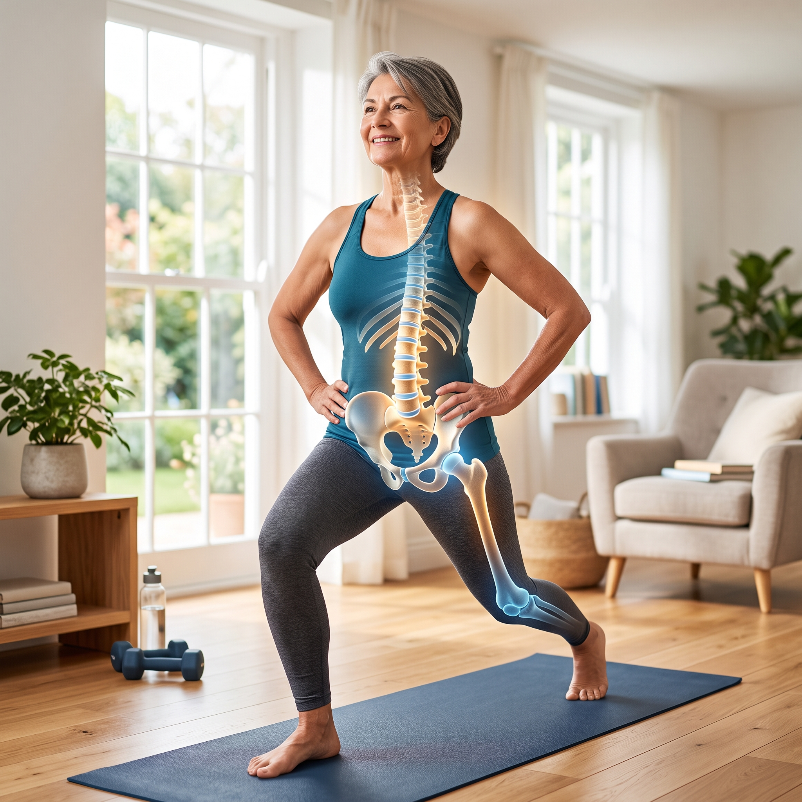

<!DOCTYPE html>
<html lang="en">
<head>
    <meta charset="UTF-8">
    <meta name="viewport" content="width=device-width, initial-scale=1.0, maximum-scale=1.0, user-scalable=no">
    <title>UNBREAKABLE</title>
    <script src="https://cdn.tailwindcss.com"></script>
    <script type="importmap">
        {
            "imports": {
                "react": "https://esm.sh/react@18.2.0",
                "react-dom/client": "https://esm.sh/react-dom@18.2.0/client",
                "lucide-react": "https://esm.sh/lucide-react@0.292.0"
            }
        }
    </script>
    <script src="https://unpkg.com/@babel/standalone/babel.min.js"></script>
    <style>
        .scrollbar-hide::-webkit-scrollbar { display: none; }
        .scrollbar-hide { -ms-overflow-style: none; scrollbar-width: none; }
        .pb-safe { padding-bottom: env(safe-area-inset-bottom, 20px); }
        .checkbox-custom:checked + label .check-icon { display: block; }
        .checkbox-custom:checked + label .text-content { text-decoration: line-through; opacity: 0.4; }
        .checkbox-custom:checked + label { border-color: #10b981; background-color: rgba(16, 185, 129, 0.1); }
        .shockwave { animation: ping 0.5s cubic-bezier(0, 0, 0.2, 1) forwards; }
        @keyframes ping { 75%, 100% { transform: scale(2.5); opacity: 0; } }
        @keyframes gentle-pulse {
            0%, 100% { transform: scale(1); box-shadow: 0 0 0 0 rgba(16, 185, 129, 0); }
            50% { transform: scale(1.02); box-shadow: 0 0 25px 5px rgba(16, 185, 129, 0.5); }
        }
        .animate-gentle-pulse { animation: gentle-pulse 3s ease-in-out infinite; }
    </style>
</head>
<body class="bg-slate-950 text-slate-200 antialiased overflow-x-hidden selection:bg-amber-500/30">
    <div id="root"></div>

    <script type="text/babel" data-type="module">
        import React, { useState, useEffect, useRef } from 'react';
        import { createRoot } from 'react-dom/client';
        import { Activity, Dumbbell, ChevronDown, Check, Eye, Layers, Repeat, Clock, Timer, Play, Pause, Utensils, ShoppingCart, RefreshCw, Coffee, Apple, Carrot, UtensilsCrossed, CupSoda, Pill, Target, BookOpen, AlertCircle, Shield, Zap, ChevronRight, Leaf, ListChecks } from 'lucide-react';

        const GYM_CONFIG = {
          daily: [
            { weight: "0 kg / 0 lbs", sets: "1", reps: "10 Min", tempo: "Static", rest: "0s", visual: "hooklying" },
            { weight: "0 kg / 0 lbs", sets: "3", reps: "10 per side", tempo: "2-2-2-0", rest: "60s", visual: "birddog" }
          ],
          liftmor: [
            { weight: "20-40kg (45-90 lbs)", sets: "5", reps: "5", tempo: "3-0-1-0", rest: "120s", visual: "rdl" },
            { weight: "8-16kg (15-35 lbs)", sets: "4", reps: "8", tempo: "2-1-1-0", rest: "90s", visual: "squat" },
            { weight: "4-10kg (9-22 lbs)", sets: "4", reps: "6", tempo: "2-0-1-0", rest: "120s", visual: "overhead" },
            { weight: "Bodyweight", sets: "3", reps: "5 Drops", tempo: "Explosive", rest: "60s", visual: "impact" }
          ]
        };

        const DIET_DAYS = ['mon', 'tue', 'wed', 'thu', 'fri', 'sat', 'sun'];

        const TRANSLATIONS = {
          en: {
            ui: {
              title: "UNBREAKABLE", subtitle: "Official Method", protocol: "Protocol", supplements: "Supplements", diet: "Diet", gym: "Gym", manual: "The Book", shop: "Shop",
              viewSide: "Side View", viewFront: "Front View",
              forge: { title: "Daily Protocol", completedDesc: "Mechanical and nutritional signal sent. Bones rebuilding.", guideBtn: "How to Use (Crucible)", s1Title: "1. The Protocol", s1Desc: "Check off the 5 pillars daily.", s2Title: "2. The Gym", s2Desc: "Master heavy loads 2x/week.", s3Title: "3. The Diet", s3Desc: "Low-oxalate calcium plans." },
              dietUI: { title: "Nutrition Blueprint", desc: "Low-oxalate & highly bioavailable daily menus.", tabs: { menu: "Daily Menu", cart: "Weekly Cart" }, profiles: { female: "Women", male: "Men", vegan: "Vegan" }, days: { mon: "Mon", tue: "Tue", wed: "Wed", thu: "Thu", fri: "Fri", sat: "Sat", sun: "Sun" }, meals: { breakfast: "Breakfast", snack1: "Morning Snack", lunch: "Lunch", snack2: "Afternoon Snack", dinner: "Dinner", tea: "Herbal Tea", supplements: "Supplements" }, clickToView: "Click to open", reset: "Reset Cart" },
              gymUI: { title: "Clinical Biomechanics", desc: "Mechanical load triggers bone growth.", tabs: { daily: "Daily Reset", liftmor: "LIFTMOR (2x/Wk)" }, freqDaily: "FREQUENCY: EVERY DAY", freqLiftmor: "FREQUENCY: 2 DAYS/WEEK (48h REST)", labels: { sets: "Sets", reps: "Reps", tempo: "Tempo", rest: "Rest", focus: "Focus:", breath: "Breath:", execution: "Execution:", weight: "Load:" }, phases: { eccentric: "Eccentric", bottom_pause: "Isometric", concentric: "Concentric", top_pause: "Top Pause", rest: "Systemic Rest", breathing: "Breathing", ready: "Ready" }, huds: { hiphinge: "HIP HINGE", hipsdown: "HIPS DOWN", bracecore: "BRACE CORE", noarch: "DO NOT ARCH!", heeldrop: "SHOCKWAVE!" } },
              manualUI: { title: "The Clinical Manual", desc: "Core concepts from the official book, condensed into actionable schemas.", disclaimerTitle: "Medical Disclaimer", disclaimerText: "For informational purposes only. Not a substitute for professional medical advice. Always consult your endocrinologist before starting any protocol or altering medications." }
            },
            habits: [
              { name: "Vit D3 + K2 MK-7", desc: "Absorbs and directs calcium into the bone." }, { name: "10-Min Floor Decompression", desc: "Neutralizes spinal gravity & resets posture." },
              { name: "LIFTMOR (Heavy Loads)", desc: "Mechanical stress triggers Wolff's Law." }, { name: "Low-Oxalate & Protein", desc: "Maximizes absorption for osteoblasts." }, { name: "Magnesium + Collagen", desc: "Builds the flexible steel matrix." }
            ],
            gymExercises: {
              daily: [
                { name: "Decompression", desc: "Spinal reset.", focus: "Elongation", breath: "Diaphragmatic", steps: ["Lie on back, knees bent.", "Pelvis in neutral position.", "Breathe deeply into abdomen."] },
                { name: "Bird-Dog", desc: "Anti-flexion core stability.", focus: "Spinal Stability", breath: "Exhale on extension", steps: ["Start on all fours.", "Brace core tightly.", "Extend opposite arm and leg."] }
              ],
              liftmor: [
                { name: "Romanian Deadlift", desc: "Posterior mechanical load.", focus: "Glute Drive", breath: "Brace, exhale up", steps: ["Barbell over mid-foot.", "Spine rigid, hinge at hips.", "Squeeze glutes to stand."] },
                { name: "Goblet Squat", desc: "Vertical stress.", focus: "Upright Torso", breath: "Brace, exhale up", steps: ["Hold kettlebell vertically.", "Sit hips down and back.", "Drive through heels."] },
                { name: "Overhead Press", desc: "Axial load.", focus: "Lockout", breath: "Exhale on press", steps: ["Stand shoulder-width.", "Brace core hard.", "Press straight up."] },
                { name: "Impact Drops", desc: "Osteogenic shockwave.", focus: "Heel Strike", breath: "Sharp exhale", steps: ["Rise high onto tiptoes.", "Drop fast and flat onto heels.", "Keep legs stiff to transfer force."] }
              ]
            },
            book: [
              { title: "1. The Diagnostic Revolution", icon: "Activity", points: ["DXA (T-Score) is a 2D illusion; it counts bone quantity but ignores architecture.", "TBS (Trabecular Bone Score) measures 3D quality and micro-bridges.", "Stop waiting 2 years: Track BTMs (CTX/P1NP) in your blood for 12-week feedback."] },
              { title: "2. Orthomolecular Nutrition", icon: "Shield", points: ["Calcium Paradox: Calcium without K2 calcifies arteries, not bones.", "D3 absorbs calcium; K2 (MK-7) acts as the traffic cop directing it to the skeleton.", "Collagen provides the flexible 'steel rebar' to calcium's 'concrete'."] },
              { title: "3. Biomechanics & Osteogenesis", icon: "Dumbbell", points: ["Wolff's Law: Bones only adapt and grow under heavy mechanical load.", "LIFTMOR Protocol: Heavy resistance (80% 1RM) + Impact safely builds density.", "Red Lines: Never flex the spine under load (no sit-ups). Master the Hip Hinge."] },
              { title: "4. Pharmacological Management", icon: "Pill", points: ["Antiresorptives (Bisphosphonates, Prolia) freeze osteoclasts but don't build new bone.", "Prolia Rebound: Stopping Denosumab suddenly causes rapid, catastrophic bone loss.", "Always use a 'Relay Baton' exit strategy (bisphosphonate) when stopping Prolia."] },
              { title: "5. The Endocrine Engine", icon: "Zap", points: ["Estrogen is the brake: it stops the demolition cells (osteoclasts).", "Testosterone is the builder: it stimulates osteoblasts to lay new matrix.", "HRT Window: Initiating bioidentical hormones within 10 years of menopause maximizes protection."] },
              { title: "6. Anabolic Pharmacology", icon: "Target", points: ["Anabolics (Teriparatide, Romosozumab) force the body to build massive new bone.", "Limited Time: They only work for 12 to 24 months before adapting.", "Relay Strategy: You must lock in anabolic gains with an antiresorptive, or you lose it all."] },
              { title: "7. The Gut-Bone Axis", icon: "Apple", points: ["Low stomach acid (caused by PPI antacids) prevents calcium absorption.", "Silent Celiac Disease destroys intestinal villi, starving the skeleton.", "Heal leaky gut to stop inflammatory cytokines from triggering osteoclasts."] },
              { title: "8. The Clinical Blueprint", icon: "Check", points: ["CTX Target (Demolition): < 300 pg/mL.", "P1NP Target (Construction): > 45 mcg/L.", "Dosages: D3 (50-70 ng/mL), K2 MK-7 (100-200mcg), Calcium (1200mg total), Collagen (5g)."] },
              { title: "9. Male Osteoporosis", icon: "Activity", points: ["Men lose bone via age-related testosterone decline (andropause).", "Less testosterone means less estrogen conversion, releasing the brakes on bone breakdown.", "Glucocorticoids (steroids) are the #1 secondary cause of rapid, silent bone loss in men."] },
              { title: "10. The 12-Week Challenge", icon: "Timer", points: ["Phase 1: Audit gut health, master the Hip Hinge, check baseline BTMs.", "Phase 2: Introduce LIFTMOR loading and orthomolecular fuel.", "Phase 3: Push mechanical threshold and re-test CTX/P1NP after 84 days."] },
              { title: "11. The Vegan Minefield", icon: "Leaf", points: ["High oxalates (spinach, almonds) block calcium. Choose Bok Choy & Kale.", "Vegan K2 (Chickpea) and D3 (Lichen) are mandatory daily supplements.", "Must hit protein threshold (1.2g/kg) and consume Glycine/Proline to build collagen."] }
            ],
            dietMenu: {
              female: {
                mon: { b: "150g (5.3oz) Greek Yogurt, 15g pumpkin seeds. Recipe: Top with cinnamon.", s1: "30g (1oz) Walnuts.", l: "150g (5.3oz) Grilled Chicken, 150g Kale. Recipe: Massage kale with olive oil.", s2: "1 Hard-boiled Egg.", d: "150g (5.3oz) Baked Salmon, 100g Broccoli. Recipe: Lemon & garlic glaze.", t: "Nettle Tea (Silica rich)." },
                tue: { b: "2 Scrambled Eggs, 30g Cheddar. Recipe: Cook in grass-fed butter.", s1: "1 Apple, 15g Almonds.", l: "150g (5.3oz) Turkey breast, 150g Bok Choy. Recipe: Stir-fry with ginger.", s2: "30g (1oz) Parmesan chunks.", d: "150g (5.3oz) Bone-in Sardines, Quinoa. Recipe: Lemon dressing.", t: "Chamomile Tea." },
                wed: { b: "150g (5.3oz) Cottage Cheese, half cup mixed berries.", s1: "30g (1oz) Pumpkin Seeds.", l: "150g (5.3oz) Chicken Salad. Recipe: Use olive oil, no croutons.", s2: "1 Hard-boiled Egg.", d: "150g (5.3oz) Firm Tofu, 150g Asparagus. Recipe: Pan-sear tofu.", t: "Ginger Tea." },
                thu: { b: "Protein Smoothie: 1 scoop whey, 150ml almond milk, 15g chia seeds.", s1: "30g (1oz) Almonds.", l: "150g (5.3oz) Smoked Salmon, large mixed green salad.", s2: "30g (1oz) Cheddar cheese.", d: "150g (5.3oz) Lean Beef Patty, 100g Broccoli.", t: "Peppermint Tea." },
                fri: { b: "2 Eggs sunny-side up, 1/2 Avocado.", s1: "15g (0.5oz) Walnuts.", l: "150g (5.3oz) Turkey, Kale wrap.", s2: "1 Hard-boiled Egg.", d: "150g (5.3oz) Sardines, Steamed Bok Choy.", t: "Nettle Tea." },
                sat: { b: "150g (5.3oz) Cottage Cheese, cinnamon.", s1: "30g (1oz) Pumpkin Seeds.", l: "150g (5.3oz) Chicken breast, Quinoa.", s2: "30g (1oz) Parmesan.", d: "150g (5.3oz) Baked Salmon, Asparagus.", t: "Chamomile Tea." },
                sun: { b: "150g (5.3oz) Greek Yogurt with chia.", s1: "30g (1oz) Almonds.", l: "150g (5.3oz) Sardines on GF crackers.", s2: "1 Hard-boiled Egg.", d: "150g (5.3oz) Steak, Broccoli.", t: "Ginger Tea." }
              },
              male: {
                mon: { b: "3 Eggs Omelet, 30g Cheese. Recipe: Cook in grass-fed butter.", s1: "45g (1.5oz) Almonds.", l: "200g (7oz) Grilled Chicken, 150g Kale. Recipe: Heavy olive oil dressing.", s2: "2 Hard-boiled Eggs.", d: "200g (7oz) Sirloin Steak, 150g Broccoli. Recipe: Sear medium-rare.", t: "Nettle Tea." },
                tue: { b: "200g (7oz) Greek Yogurt, 20g Chia seeds.", s1: "45g (1.5oz) Walnuts.", l: "200g (7oz) Turkey meat, Bok Choy.", s2: "50g (1.7oz) Parmesan.", d: "200g (7oz) Salmon fillet, Asparagus.", t: "Chamomile Tea." },
                wed: { b: "3 Scrambled Eggs, 1 Avocado.", s1: "45g (1.5oz) Pumpkin Seeds.", l: "200g (7oz) Bone-in Sardines, Quinoa.", s2: "2 Hard-boiled Eggs.", d: "200g (7oz) Pork Chop, Green beans.", t: "Ginger Tea." },
                thu: { b: "200g (7oz) Cottage Cheese, mixed berries.", s1: "45g (1.5oz) Almonds.", l: "200g (7oz) Chicken Salad, heavy olive oil.", s2: "50g (1.7oz) Cheddar.", d: "200g (7oz) Ribeye Steak, Broccoli.", t: "Peppermint Tea." },
                fri: { b: "3 Eggs, Cheese, Spinach (cooked).", s1: "45g (1.5oz) Walnuts.", l: "200g (7oz) Turkey slices, large salad.", s2: "2 Hard-boiled Eggs.", d: "200g (7oz) Baked Salmon, Bok Choy.", t: "Nettle Tea." },
                sat: { b: "Protein Shake: 2 scoops whey, water.", s1: "45g (1.5oz) Pumpkin Seeds.", l: "200g (7oz) Sardines on toast.", s2: "50g (1.7oz) Parmesan.", d: "200g (7oz) Pork tenderloin, Asparagus.", t: "Chamomile Tea." },
                sun: { b: "3 Eggs, 1 Avocado.", s1: "45g (1.5oz) Almonds.", l: "200g (7oz) Grilled Chicken.", s2: "2 Hard-boiled Eggs.", d: "200g (7oz) Steak, Mixed Greens.", t: "Ginger Tea." }
              },
              vegan: {
                mon: { b: "200g (7oz) Calcium-set Tofu Scramble. Recipe: Add turmeric and black pepper.", s1: "30g (1oz) Pumpkin Seeds.", l: "150g (5.3oz) Lentil Stew, 150g Kale.", s2: "150g (5.3oz) Soy Yogurt.", d: "150g (5.3oz) Baked Tempeh, 100g Broccoli.", t: "Nettle Tea." },
                tue: { b: "150g (5.3oz) Soy Yogurt, 20g Chia.", s1: "30g (1oz) Walnuts.", l: "150g (5.3oz) Chickpea Salad, Bok Choy.", s2: "Handful Almonds.", d: "200g (7oz) Calcium-Tofu stir-fry, Asparagus.", t: "Chamomile Tea." },
                wed: { b: "Protein Oatmeal: Fortified plant milk, pea protein scoop.", s1: "30g (1oz) Pumpkin Seeds.", l: "150g (5.3oz) Seitan chunks, Greens.", s2: "150g (5.3oz) Soy Yogurt.", d: "150g (5.3oz) Lentils, Quinoa.", t: "Ginger Tea." },
                thu: { b: "200g (7oz) Calcium-Tofu Scramble.", s1: "30g (1oz) Walnuts.", l: "150g (5.3oz) Tempeh wrap, Kale.", s2: "Handful Almonds.", d: "150g (5.3oz) Chickpea curry, Broccoli.", t: "Peppermint Tea." },
                fri: { b: "150g (5.3oz) Soy Yogurt, berries.", s1: "30g (1oz) Pumpkin Seeds.", l: "150g (5.3oz) Lentil soup, Bok Choy.", s2: "150g (5.3oz) Soy Yogurt.", d: "200g (7oz) Calcium-Tofu, Asparagus.", t: "Nettle Tea." },
                sat: { b: "Protein Shake: Pea/Rice protein blend, water.", s1: "30g (1oz) Walnuts.", l: "150g (5.3oz) Seitan salad.", s2: "Handful Almonds.", d: "150g (5.3oz) Tempeh, Greens.", t: "Chamomile Tea." },
                sun: { b: "200g (7oz) Calcium-Tofu Scramble.", s1: "30g (1oz) Pumpkin Seeds.", l: "150g (5.3oz) Chickpea stew.", s2: "150g (5.3oz) Soy Yogurt.", d: "150g (5.3oz) Lentils, Broccoli.", t: "Ginger Tea." }
              }
            },
            cartItems: {
              female: ["1kg (35oz) Greek Yogurt", "14 Pasture-raised Eggs", "300g (10oz) Chicken Breast", "300g (10oz) Salmon", "300g (10oz) Bone-in Sardines", "500g (17oz) Kale / Bok Choy", "500g (17oz) Broccoli", "300g (10oz) Almonds & Pumpkin Seeds", "Vit D3, K2 MK-7, Magnesium, Collagen"],
              male: ["1.5kg (52oz) Greek Yogurt", "21 Pasture-raised Eggs", "600g (21oz) Chicken Breast", "600g (21oz) Steak", "400g (14oz) Salmon", "700g (24oz) Kale / Bok Choy", "700g (24oz) Broccoli", "500g (17oz) Mixed Nuts & Seeds", "Vit D3, K2 MK-7, Magnesium, Collagen"],
              vegan: ["1.5kg (52oz) Calcium-set Tofu", "600g (21oz) Lentils", "500g (17oz) Tempeh", "500g (17oz) Chickpeas", "700g (24oz) Kale / Bok Choy", "500g (17oz) Soy Yogurt", "Vegan D3, K2 MK-7, Magnesium, Amino Acids"]
            }
          },
          it: {
            ui: {
              title: "UNBREAKABLE", subtitle: "Metodo Ufficiale", protocol: "Protocollo", supplements: "Integrazione", diet: "Dieta", gym: "Palestra", manual: "Il Libro", shop: "Shop",
              viewSide: "Vista Laterale", viewFront: "Vista Frontale",
              forge: { title: "Protocollo Quotidiano", completedDesc: "Segnale meccanico e nutrizionale inviato. Le ossa ricostruiscono.", guideBtn: "Come usare l'App", s1Title: "1. Il Protocollo", s1Desc: "Spunta i 5 pilastri ogni giorno.", s2Title: "2. La Palestra", s2Desc: "Padroneggia i carichi 2x/sett.", s3Title: "3. La Dieta", s3Desc: "Piani calcio a basso ossalato." },
              dietUI: { title: "Piano Nutrizionale", desc: "Menu ad alta biodisponibilità.", tabs: { menu: "Menu", cart: "Spesa Settimanale" }, profiles: { female: "Donna", male: "Uomo", vegan: "Vegano" }, days: { mon: "Lun", tue: "Mar", wed: "Mer", thu: "Gio", fri: "Ven", sat: "Sab", sun: "Dom" }, meals: { breakfast: "Colazione", snack1: "Spuntino", lunch: "Pranzo", snack2: "Spuntino", dinner: "Cena", tea: "Tisana", supplements: "Integrazione" }, clickToView: "Clicca per aprire", reset: "Azzera Lista" },
              gymUI: { title: "Biomeccanica Clinica", desc: "Il carico meccanico innesca la crescita.", tabs: { daily: "Reset Quotidiano", liftmor: "LIFTMOR (2x/Sett)" }, freqDaily: "FREQUENZA: TUTTI I GIORNI", freqLiftmor: "FREQUENZA: 2 GIORNI/SETTIMANA (48h RIPOSO)", labels: { sets: "Serie", reps: "Reps", tempo: "Tempo", rest: "Recupero", focus: "Focus:", breath: "Respiro:", execution: "Esecuzione:", weight: "Carico:" }, phases: { eccentric: "Eccentrica", bottom_pause: "Isometria", concentric: "Concentrica", top_pause: "Pausa in alto", rest: "Recupero", breathing: "Respirazione", ready: "Pronto" }, huds: { hiphinge: "HIP HINGE", hipsdown: "BACINO GIÙ", bracecore: "CORE RIGIDO", noarch: "NON CURVARE!", heeldrop: "ONDA D'URTO!" } },
              manualUI: { title: "Il Manuale Clinico", desc: "Concetti chiave dal libro ufficiale, condensati in schemi.", disclaimerTitle: "Disclaimer Medico", disclaimerText: "Solo per scopi informativi. Non sostituisce il parere medico. Consulta sempre l'endocrinologo prima di alterare farmaci o protocolli." }
            },
            habits: [
              { name: "Vit D3 + K2 MK-7", desc: "Assorbe e dirige il calcio nell'osso." }, { name: "10-Min Decompressione", desc: "Neutralizza la gravità e resetta la postura." },
              { name: "LIFTMOR (Carichi)", desc: "Lo stress meccanico innesca la Legge di Wolff." }, { name: "Basso Ossalato & Proteine", desc: "Massimizza l'assorbimento per gli osteoblasti." }, { name: "Magnesio + Collagene", desc: "Costruisce la matrice flessibile d'acciaio." }
            ],
            gymExercises: {
              daily: [
                { name: "Decompressione", desc: "Reset spinale.", focus: "Elongazione", breath: "Diaframmatica", steps: ["Sdraiati, ginocchia piegate.", "Bacino neutro.", "Respira profondo."] },
                { name: "Bird-Dog", desc: "Stabilità anti-flessione.", focus: "Stabilità", breath: "Espira in estensione", steps: ["A quattro zampe.", "Contrai il core.", "Estendi braccio e gamba opposti."] }
              ],
              liftmor: [
                { name: "Stacco Romeno (RDL)", desc: "Carico posteriore.", focus: "Spinta Glutei", breath: "Contrai, espira su", steps: ["Bilanciere sul mesopiede.", "Schiena rigida, fletti le anche.", "Strizza glutei."] },
                { name: "Goblet Squat", desc: "Stress verticale.", focus: "Torace Dritto", breath: "Contrai, espira su", steps: ["Tieni il kettlebell al petto.", "Siediti all'indietro.", "Spingi dai talloni."] },
                { name: "Overhead Press", desc: "Carico assiale.", focus: "Blocco in Alto", breath: "Espira spingendo", steps: ["Piedi larghezza spalle.", "Core rigido.", "Spingi il bilanciere in alto."] },
                { name: "Impatti (Jump Drops)", desc: "Onda d'urto.", focus: "Impatto Tallone", breath: "Espira forte", steps: ["Sali in punta di piedi.", "Cadi rapido sui talloni.", "Gambe rigide per trasferire forza."] }
              ]
            },
            book: [
              { title: "1. Rivoluzione Diagnostica", icon: "Activity", points: ["La DXA (T-Score) è un'illusione 2D; conta la quantità ma ignora l'architettura.", "Il TBS (Trabecular Bone Score) misura la qualità 3D dei ponti ossei.", "Non aspettare 2 anni: traccia i BTM (CTX/P1NP) nel sangue per feedback in 12 settimane."] },
              { title: "2. Nutrizione Ortomolecolare", icon: "Shield", points: ["Paradosso del Calcio: Il calcio senza K2 calcifica le arterie, non le ossa.", "La D3 assorbe il calcio; la K2 (MK-7) fa da vigile dirigendolo allo scheletro.", "Il collagene è il 'cemento armato' flessibile per la durezza del calcio."] },
              { title: "3. Biomeccanica & Osteogenesi", icon: "Dumbbell", points: ["Legge di Wolff: L'osso cresce solo sotto pesante carico meccanico.", "Protocollo LIFTMOR: Resistenze pesanti (80% 1RM) + Impatti costruiscono densità.", "Mai flettere la colonna sotto carico (no sit-up). Padroneggia l'Hip Hinge."] },
              { title: "4. Gestione Farmacologica", icon: "Pill", points: ["Gli antiriassorbitivi (Bisfosfonati, Prolia) bloccano gli osteoclasti ma non creano osso nuovo.", "Rimbalzo Prolia: Sospendere Denosumab causa una perdita ossea rapida e catastrofica.", "Usa sempre una strategia a 'Staffetta' (bisfosfonato) quando interrompi Prolia."] },
              { title: "5. Il Motore Endocrino", icon: "Zap", points: ["L'Estrogeno è il freno: ferma le cellule demolitrici (osteoclasti).", "Testosterone è il costruttore: stimola gli osteoblasti a deporre matrice.", "Finestra HRT: Iniziare ormoni bioidentici entro 10 anni dalla menopausa massimizza la protezione."] },
              { title: "6. Farmacologia Anabolica", icon: "Target", points: ["Gli anabolizzanti (Teriparatide, Romosozumab) forzano la creazione di osso nuovo e massiccio.", "Tempo Limitato: Funzionano solo per 12-24 mesi prima dell'adattamento.", "Staffetta Obbligatoria: Devi sigillare i guadagni con un antiriassorbitivo, altrimenti perdi tutto."] },
              { title: "7. L'Asse Intestino-Osso", icon: "Apple", points: ["Poco acido gastrico (causato da antiacidi PPI) blocca l'assorbimento del calcio.", "La Celiachia Silente distrugge i villi intestinali, affamando lo scheletro.", "Cura l'intestino gocciolante per fermare l'infiammazione che attiva gli osteoclasti."] },
              { title: "8. Il Blueprint Clinico", icon: "Check", points: ["Target CTX (Demolizione): < 300 pg/mL.", "Target P1NP (Costruzione): > 45 mcg/L.", "Dosaggi: D3 (50-70 ng/mL), K2 MK-7 (100-200mcg), Calcio (1200mg totali), Collagene (5g)."] },
              { title: "9. Osteoporosi Maschile", icon: "Activity", points: ["Gli uomini perdono osso col calo del testosterone (andropausa).", "Meno testosterone significa meno conversione in estrogeni (si rompe il freno).", "I Glucocorticoidi (cortisone) sono la causa secondaria #1 di perdita ossea rapida."] },
              { title: "10. La Sfida di 12 Settimane", icon: "Timer", points: ["Fase 1: Audit intestinale, padroneggia Hip Hinge, esami BTM di base.", "Fase 2: Introduci i carichi LIFTMOR e il carburante ortomolecolare.", "Fase 3: Spingi il limite meccanico e ritesta CTX/P1NP dopo 84 giorni."] },
              { title: "11. Il Campo Minato Vegano", icon: "Leaf", points: ["Gli ossalati (spinaci, mandorle) bloccano il calcio. Scegli Bok Choy e Cavolo Nero.", "K2 Vegana (Ceci) e D3 (Lichene) sono supplementi quotidiani obbligatori.", "Devi raggiungere la soglia proteica (1.2g/kg) e consumare Glicina/Prolina per il collagene."] }
            ],
            dietMenu: {
              female: {
                mon: { b: "150g Yogurt Greco, 15g semi zucca. Ricetta: Con cannella.", s1: "30g Noci.", l: "150g Pollo ai ferri, 150g Cavolo Nero. Ricetta: Olio e limone.", s2: "1 Uovo Sodo.", d: "150g Salmone al forno, 100g Broccoli.", t: "Tisana Ortica." },
                tue: { b: "2 Uova strapazzate, 30g Parmigiano.", s1: "1 Mela, 15g Mandorle.", l: "150g Tacchino, 150g Bok Choy saltato.", s2: "30g Grana.", d: "150g Sardine con lisca, Quinoa.", t: "Tisana Camomilla." },
                wed: { b: "150g Fiocchi di Latte, frutti rossi.", s1: "30g Semi Zucca.", l: "150g Insalata Pollo (no crostini).", s2: "1 Uovo Sodo.", d: "150g Tofu scottato, 150g Asparagi.", t: "Tisana Zenzero." },
                thu: { b: "Frullato Proteico: Whey, latte mandorla, 15g chia.", s1: "30g Mandorle.", l: "150g Salmone affumicato, Verdure.", s2: "30g Grana.", d: "150g Hamburger di Manzo magro, Broccoli.", t: "Tisana Menta." },
                fri: { b: "2 Uova all'occhio di bue, 1/2 Avocado.", s1: "15g Noci.", l: "150g Tacchino a fette, insalata.", s2: "1 Uovo Sodo.", d: "150g Sardine, Bok Choy al vapore.", t: "Tisana Ortica." },
                sat: { b: "150g Fiocchi di Latte, cannella.", s1: "30g Semi Zucca.", l: "150g Pollo, Quinoa.", s2: "30g Parmigiano.", d: "150g Salmone al forno, Asparagi.", t: "Tisana Camomilla." },
                sun: { b: "150g Yogurt Greco, chia.", s1: "30g Mandorle.", l: "150g Sardine, verdure.", s2: "1 Uovo Sodo.", d: "150g Bistecca, Broccoli.", t: "Tisana Zenzero." }
              },
              male: {
                mon: { b: "Omelette 3 Uova, 30g Formaggio.", s1: "45g Mandorle.", l: "200g Pollo, 150g Cavolo Nero. Ricetta: Abbondante olio.", s2: "2 Uova Sode.", d: "200g Bistecca (cottura media), 150g Broccoli.", t: "Tisana Ortica." },
                tue: { b: "200g Yogurt Greco, 20g Chia.", s1: "45g Noci.", l: "200g Tacchino, Bok Choy.", s2: "50g Grana.", d: "200g Salmone, Asparagi.", t: "Tisana Camomilla." },
                wed: { b: "3 Uova strapazzate, 1 Avocado.", s1: "45g Semi Zucca.", l: "200g Sardine, Quinoa.", s2: "2 Uova Sode.", d: "200g Braciola Maiale, Fagiolini.", t: "Tisana Zenzero." },
                thu: { b: "200g Fiocchi di Latte, frutti rossi.", s1: "45g Mandorle.", l: "200g Insalata Pollo.", s2: "50g Grana.", d: "200g Bistecca, Broccoli.", t: "Tisana Menta." },
                fri: { b: "3 Uova, Formaggio, Spinaci (cotti).", s1: "45g Noci.", l: "200g Tacchino, verdure.", s2: "2 Uova Sode.", d: "200g Salmone al forno, Bok Choy.", t: "Tisana Ortica." },
                sat: { b: "Frullato: 2 misurini Whey, acqua.", s1: "45g Semi Zucca.", l: "200g Sardine.", s2: "50g Grana.", d: "200g Arrosto Maiale, Asparagi.", t: "Tisana Camomilla." },
                sun: { b: "3 Uova, 1 Avocado.", s1: "45g Mandorle.", l: "200g Pollo ai ferri.", s2: "2 Uova Sode.", d: "200g Bistecca, verdure.", t: "Tisana Zenzero." }
              },
              vegan: {
                mon: { b: "200g Tofu (Set Calcio) Strapazzato. Ricetta: Curcuma e pepe nero.", s1: "30g Semi Zucca.", l: "150g Zuppa Lenticchie, 150g Cavolo Nero.", s2: "150g Yogurt Soia.", d: "150g Tempeh al forno, 100g Broccoli.", t: "Tisana Ortica." },
                tue: { b: "150g Yogurt Soia, 20g Chia.", s1: "30g Noci.", l: "150g Insalata Ceci, Bok Choy.", s2: "Manciata Mandorle.", d: "200g Tofu saltato, Asparagi.", t: "Tisana Camomilla." },
                wed: { b: "Porridge Proteico: Latte veg, misurino proteine pisello.", s1: "30g Semi Zucca.", l: "150g Seitan, Verdure.", s2: "150g Yogurt Soia.", d: "150g Lenticchie, Quinoa.", t: "Tisana Zenzero." },
                thu: { b: "200g Tofu Strapazzato.", s1: "30g Noci.", l: "150g Piadina con Tempeh e Cavolo.", s2: "Manciata Mandorle.", d: "150g Curry di Ceci, Broccoli.", t: "Tisana Menta." },
                fri: { b: "150g Yogurt Soia, frutti rossi.", s1: "30g Semi Zucca.", l: "150g Zuppa Lenticchie, Bok Choy.", s2: "150g Yogurt Soia.", d: "200g Tofu, Asparagi.", t: "Tisana Ortica." },
                sat: { b: "Frullato Proteico Vegano.", s1: "30g Noci.", l: "150g Insalata Seitan.", s2: "Manciata Mandorle.", d: "150g Tempeh, Verdure.", t: "Tisana Camomilla." },
                sun: { b: "200g Tofu Strapazzato.", s1: "30g Semi Zucca.", l: "150g Stufato Ceci.", s2: "150g Yogurt Soia.", d: "150g Lenticchie, Broccoli.", t: "Tisana Zenzero." }
              }
            },
            cartItems: {
              female: ["1kg Yogurt Greco", "14 Uova Bio", "300g Petto Pollo", "300g Salmone", "300g Sardine (con lisca)", "500g Cavolo Nero/Bok Choy", "500g Broccoli", "300g Noci & Semi Zucca", "Vit D3, K2 MK-7, Magnesio, Collagene"],
              male: ["1.5kg Yogurt Greco", "21 Uova Bio", "600g Petto Pollo", "600g Bistecca", "400g Salmone", "700g Cavolo Nero/Bok Choy", "700g Broccoli", "500g Noci Miste", "Vit D3, K2 MK-7, Magnesio, Collagene"],
              vegan: ["1.5kg Tofu (Set al Calcio)", "600g Lenticchie", "500g Tempeh", "500g Ceci", "700g Cavolo Nero/Bok Choy", "500g Yogurt di Soia", "Vegan D3, K2 MK-7, Magnesio, Aminoacidi"]
            }
          },
          fr: {
            ui: {
              title: "UNBREAKABLE", subtitle: "Méthode Officielle", protocol: "Protocole", supplements: "Suppléments", diet: "Diète", gym: "Gym", manual: "Le Livre", shop: "Boutique", viewSide: "Vue Latérale", viewFront: "Vue Frontale",
              forge: { title: "Protocole Quotidien", completedDesc: "Signal mécanique envoyé. Les os reconstruisent.", guideBtn: "Guide d'utilisation", s1Title: "1. Protocole", s1Desc: "Validez les 5 piliers.", s2Title: "2. Gym", s2Desc: "Charges lourdes 2x/sem.", s3Title: "3. Diète", s3Desc: "Plan calcium faible oxalate." },
              dietUI: { title: "Plan Nutritionnel", desc: "Menu quotidien hautement biodisponible.", tabs: { menu: "Menu", cart: "Achats Hebdo" }, profiles: { female: "Femme", male: "Homme", vegan: "Vegan" }, days: { mon: "Lun", tue: "Mar", wed: "Mer", thu: "Jeu", fri: "Ven", sat: "Sam", sun: "Dim" }, meals: { breakfast: "Petit Dèj", snack1: "Collation", lunch: "Déjeuner", snack2: "Goûter", dinner: "Dîner", tea: "Tisane", supplements: "Compléments" }, clickToView: "Cliquez pour ouvrir", reset: "Réinitialiser" },
              gymUI: { title: "Biomécanique", desc: "La charge mécanique est le langage des os.", tabs: { daily: "Quotidien", liftmor: "LIFTMOR (2x/Sem)" }, freqDaily: "FRÉQUENCE: TOUS LES JOURS", freqLiftmor: "FRÉQUENCE: 2 JOURS/SEMAINE (48h REPOS)", labels: { sets: "Séries", reps: "Rép", tempo: "Tempo", rest: "Repos", focus: "Focus:", breath: "Respir:", execution: "Exécution:", weight: "Poids:" }, phases: { eccentric: "Excentrique", bottom_pause: "Isométrique", concentric: "Concentrique", top_pause: "Pause", rest: "Repos", breathing: "Respiration", ready: "Prêt" }, huds: { hiphinge: "HIP HINGE", hipsdown: "BASSIN BAS", bracecore: "GAINAGE", noarch: "NE PAS CAMBRER", heeldrop: "CHOC TALON!" } },
              manualUI: { title: "Le Manuel", desc: "Concepts du livre, condensés en schémas.", disclaimerTitle: "Avis Médical", disclaimerText: "Information seulement. Consultez votre médecin." }
            },
            habits: [{ name: "Vit D3 + K2", desc: "Absorbe et dirige le calcium." }, { name: "10-Min Décompression", desc: "Neutralise la gravité." }, { name: "LIFTMOR", desc: "Stress mécanique (Loi de Wolff)." }, { name: "Faible Oxalate", desc: "Maximise l'absorption." }, { name: "Magnésium + Collagène", desc: "Matrice flexible." }],
            gymExercises: { daily: [{ name: "Décompression", desc: "Reset.", focus: "Élongation", breath: "Diaphragme", steps: ["Allongé.", "Bassin neutre.", "Respirer."] }, { name: "Bird-Dog", desc: "Anti-flexion.", focus: "Stabilité", breath: "Expirer", steps: ["À 4 pattes.", "Gainer.", "Tendre bras/jambe opposés."] }], liftmor: [{ name: "RDL", desc: "Charge arrière.", focus: "Fessiers", breath: "Gainer", steps: ["Fléchir hanches.", "Dos neutre.", "Serrer."] }, { name: "Goblet Squat", desc: "Vertical.", focus: "Torse droit", breath: "Gainer", steps: ["Tenir poids.", "S'asseoir.", "Pousser."] }, { name: "Overhead", desc: "Charge axiale.", focus: "Verrouillage", breath: "Expirer", steps: ["Gainer.", "Pousser.", "Verrouiller."] }, { name: "Impacts", desc: "Onde de choc.", focus: "Talon", breath: "Expirer", steps: ["Pointes.", "Tomber sur talons.", "Raides."] }] },
            book: [ { title: "1. Révolution Diagnostique", icon: "Activity", points: ["La DXA (T-Score) est une illusion 2D; elle compte la quantité mais ignore l'architecture.", "Le TBS (Trabecular Bone Score) mesure la qualité 3D des ponts osseux.", "N'attendez pas 2 ans : suivez les BTM (CTX/P1NP) pour un retour en 12 semaines."] }, { title: "2. Nutrition Ortomoléculaire", icon: "Shield", points: ["Paradoxe du calcium : sans K2, le calcium calcifie les artères, pas les os.", "La D3 absorbe le calcium; la K2 (MK-7) le dirige vers le squelette.", "Le collagene est l'armature flexible en acier pour la dureté du calcium."] }, { title: "3. Biomécanique & Ostéogenèse", icon: "Dumbbell", points: ["Loi de Wolff : Les os grandissent uniquement sous une lourde charge mécanique.", "Protocole LIFTMOR : Résistance lourde (80% 1RM) + Impacts.", "Ne jamais fléchir la colonne sous charge (pas de sit-ups). Maîtrisez le Hip Hinge."] }, { title: "4. Gestion Pharmacologique", icon: "Pill", points: ["Les antirésorptifs (Prolia, Biphosphonates) bloquent les ostéoclastes mais ne créent pas d'os.", "Rebond Prolia : L'arrêt soudain provoque une perte osseuse catastrophique.", "Utilisez toujours une stratégie de 'Relais' lors de l'arrêt du Prolia."] }, { title: "5. Le Moteur Endocrinien", icon: "Zap", points: ["L'œstrogène est le frein : il arrête les cellules destructrices.", "La testostérone est le bâtisseur : elle stimule la nouvelle matrice.", "Fenêtre THS : Commencer les hormones bio-identiques dans les 10 ans post-ménopause."] }, { title: "6. Pharmacologie Anabolique", icon: "Target", points: ["Les anabolisants forcent la création de nouvel os massif.", "Temps limité : Ils fonctionnent 12 à 24 mois avant adaptation.", "Relais obligatoire : Vous devez verrouiller les gains avec un antirésorptif."] }, { title: "7. L'Axe Intestin-Os", icon: "Apple", points: ["Le manque d'acide gastrique (dû aux antiacides) bloque l'absorption du calcium.", "La maladie cœliaque silencieuse détruit les villosités intestinales.", "Soignez l'intestin perméable pour arrêter l'inflammation."] }, { title: "8. Le Blueprint Clinique", icon: "Check", points: ["Cible CTX (Démolition) : < 300 pg/mL.", "Cible P1NP (Construction) : > 45 mcg/L.", "Dosages : D3 (50-70 ng/mL), K2 MK-7 (100-200mcg), Calcium (1200mg), Collagène (5g)."] }, { title: "9. Ostéoporose Masculine", icon: "Activity", points: ["Les hommes perdent de l'os via la baisse de testostérone (andropause).", "Moins de testostérone = moins d'œstrogènes (frein désactivé).", "Les stéroïdes (cortisone) sont la première cause de perte osseuse secondaire."] }, { title: "10. Le Défi de 12 Semaines", icon: "Timer", points: ["Phase 1 : Audit intestinal, maîtrise du Hip Hinge, BTM de base.", "Phase 2 : Introduction des charges LIFTMOR et carburant.", "Phase 3 : Poussez le seuil mécanique et re-testez après 84 jours."] }, { title: "11. Le Champ de Mines Vegan", icon: "Leaf", points: ["Les oxalates (épinards, amandes) bloquent le calcium. Choisissez Bok Choy.", "La K2 vegan et la D3 (Lichen) sont obligatoires.", "Atteignez 1.2g/kg de protéines et consommez de la Glycine/Proline."] } ],
            dietMenu: {
              female: { mon: { b: "150g Yaourt Grec.", s1: "30g Amandes.", l: "150g Poulet, 150g Chou.", s2: "1 Oeuf dur.", d: "150g Saumon, 100g Brocoli.", t: "Tisana." }, tue: { b: "2 Oeufs.", s1: "15g Noix.", l: "150g Dinde.", s2: "30g Fromage.", d: "150g Sardines.", t: "Tisana." }, wed: { b: "150g Fromage Blanc.", s1: "30g Graines.", l: "150g Salade Poulet.", s2: "1 Oeuf dur.", d: "150g Tofu, Asperges.", t: "Tisana." }, thu: { b: "150g Yaourt Grec.", s1: "30g Amandes.", l: "150g Saumon.", s2: "30g Fromage.", d: "150g Boeuf.", t: "Tisana." }, fri: { b: "2 Oeufs.", s1: "15g Noix.", l: "150g Dinde.", s2: "1 Oeuf dur.", d: "150g Sardines.", t: "Tisana." }, sat: { b: "150g Fromage Blanc.", s1: "30g Graines.", l: "150g Poulet.", s2: "30g Fromage.", d: "150g Saumon.", t: "Tisana." }, sun: { b: "150g Yaourt.", s1: "30g Amandes.", l: "150g Sardines.", s2: "1 Oeuf.", d: "150g Tofu.", t: "Tisana." } },
              male: { mon: { b: "3 Oeufs.", s1: "45g Amandes.", l: "200g Poulet, 150g Chou.", s2: "2 Oeufs.", d: "200g Steak, 150g Brocoli.", t: "Tisana." }, tue: { b: "200g Yaourt.", s1: "45g Noix.", l: "200g Dinde.", s2: "50g Fromage.", d: "200g Saumon.", t: "Tisana." }, wed: { b: "3 Oeufs.", s1: "45g Graines.", l: "200g Sardines.", s2: "2 Oeufs.", d: "200g Porc.", t: "Tisana." }, thu: { b: "200g Fromage Blanc.", s1: "45g Amandes.", l: "200g Poulet.", s2: "50g Fromage.", d: "200g Steak.", t: "Tisana." }, fri: { b: "3 Oeufs.", s1: "45g Noix.", l: "200g Dinde.", s2: "2 Oeufs.", d: "200g Saumon.", t: "Tisana." }, sat: { b: "200g Yaourt.", s1: "45g Graines.", l: "200g Sardines.", s2: "50g Fromage.", d: "200g Porc.", t: "Tisana." }, sun: { b: "3 Oeufs.", s1: "45g Amandes.", l: "200g Poulet.", s2: "2 Oeufs.", d: "200g Steak.", t: "Tisana." } },
              vegan: { mon: { b: "200g Tofu.", s1: "30g Graines.", l: "150g Lentilles.", s2: "150g Yaourt Soja.", d: "150g Tempeh.", t: "Tisana." }, tue: { b: "150g Yaourt Soja.", s1: "30g Noix.", l: "150g Pois chiches.", s2: "Amandes.", d: "200g Tofu.", t: "Tisana." }, wed: { b: "Porridge.", s1: "30g Graines.", l: "150g Seitan.", s2: "150g Yaourt Soja.", d: "150g Lentilles.", t: "Tisana." }, thu: { b: "200g Tofu.", s1: "30g Noix.", l: "150g Tempeh.", s2: "Amandes.", d: "150g Pois chiches.", t: "Tisana." }, fri: { b: "150g Yaourt Soja.", s1: "30g Graines.", l: "150g Lentilles.", s2: "150g Yaourt Soja.", d: "200g Tofu.", t: "Tisana." }, sat: { b: "Shake.", s1: "30g Noix.", l: "150g Seitan.", s2: "Amandes.", d: "150g Tempeh.", t: "Tisana." }, sun: { b: "200g Tofu.", s1: "30g Graines.", l: "150g Pois chiches.", s2: "150g Yaourt Soja.", d: "150g Lentilles.", t: "Tisana." } }
            },
            cartItems: { female: ["1kg Yaourt Grec", "14 Oeufs", "300g Poulet", "300g Saumon", "300g Sardines", "500g Chou", "500g Brocoli", "Vit D3, K2, Mag, Col"], male: ["1.5kg Yaourt", "21 Oeufs", "600g Poulet", "600g Steak", "400g Saumon", "700g Chou", "Vit D3, K2, Mag, Col"], vegan: ["1.5kg Tofu", "600g Lentilles", "500g Tempeh", "500g Pois chiches", "700g Chou", "Vegan D3, K2, Mag, Aminés"] }
          },
          de: {
            ui: {
              title: "UNBREAKABLE", subtitle: "Methode", protocol: "Protokoll", supplements: "Ergänzungen", diet: "Diät", gym: "Fitness", manual: "Das Buch", shop: "Shop", viewSide: "Seite", viewFront: "Front",
              forge: { title: "Protokoll", completedDesc: "Signal gesendet.", guideBtn: "Anleitung", s1Title: "1. Protokoll", s1Desc: "5 Säulen.", s2Title: "2. Fitness", s2Desc: "Schwere Lasten.", s3Title: "3. Diät", s3Desc: "Kalzium." },
              dietUI: { title: "Ernährungsplan", desc: "Wenig Oxalat.", tabs: { menu: "Menü", cart: "Wöchentlicher Einkauf" }, profiles: { female: "Frauen", male: "Männer", vegan: "Vegan" }, days: { mon: "Mo", tue: "Di", wed: "Mi", thu: "Do", fri: "Fr", sat: "Sa", sun: "So" }, meals: { breakfast: "Frühstück", snack1: "Snack", lunch: "Mittag", snack2: "Snack", dinner: "Abendessen", tea: "Tee", supplements: "Ergänzungen" }, clickToView: "Klicken zum Öffnen", reset: "Reset" },
              gymUI: { title: "Biomechanik", desc: "Belastung baut Knochen auf.", tabs: { daily: "Täglich", liftmor: "LIFTMOR (2x/Wo)" }, freqDaily: "HÄUFIGKEIT: JEDEN TAG", freqLiftmor: "HÄUFIGKEIT: 2 TAGE/WOCHE (48h PAUSE)", labels: { sets: "Sätze", reps: "Wdh", tempo: "Tempo", rest: "Pause", focus: "Fokus:", breath: "Atmung:", execution: "Ausführung:", weight: "Gewicht:" }, phases: { eccentric: "Exzentrisch", bottom_pause: "Isometrisch", concentric: "Konzentrisch", top_pause: "Pause", rest: "Pause", breathing: "Atmung", ready: "Bereit" }, huds: { hiphinge: "HÜFTBEUGUNG", hipsdown: "HÜFTE TIEF", bracecore: "CORE", noarch: "NICHT KRÜMMEN", heeldrop: "SCHOCKWELLE!" } },
              manualUI: { title: "Das Buch", desc: "Zusammenfassung.", disclaimerTitle: "Haftungsausschluss", disclaimerText: "Nur zur Information." }
            },
            habits: [{ name: "Vit D3 + K2", desc: "Absorbiert Kalzium." }, { name: "10-Min Dekompression", desc: "Neutralisiert Schwerkraft." }, { name: "LIFTMOR", desc: "Wolff-Gesetz." }, { name: "Wenig Oxalat", desc: "Nährt Osteoblasten." }, { name: "Magnesium + Kollagen", desc: "Flexible Matrix." }],
            gymExercises: { daily: [{ name: "Dekompression", desc: "Reset.", focus: "Verlängerung", breath: "Zwerchfell", steps: ["Rückenlage.", "Becken neutral.", "Atmen."] }, { name: "Bird-Dog", desc: "Anti-Flexion.", focus: "Stabilität", breath: "Ausatmen", steps: ["Vierfüßler.", "Core.", "Gegenüberliegende strecken."] }], liftmor: [{ name: "RDL", desc: "Hintere Kette.", focus: "Gesäß", breath: "Anspannen", steps: ["Hüfte beugen.", "Rücken neutral.", "Anspannen."] }, { name: "Goblet Squat", desc: "Vertikal.", focus: "Gerade", breath: "Anspannen", steps: ["Gewicht halten.", "Sitzen.", "Drücken."] }, { name: "Overhead", desc: "Axial.", focus: "Lockout", breath: "Ausatmen", steps: ["Core.", "Drücken.", "Locken."] }, { name: "Impacts", desc: "Schock.", focus: "Fersen", breath: "Ausatmen", steps: ["Zehen.", "Hart auf Fersen fallen.", "Steif."] }] },
            book: [ { title: "1. Die Diagnostische Revolution", icon: "Activity", points: ["DXA ist eine 2D-Illusion; es misst die Menge, ignoriert aber die Architektur.", "Der TBS (Trabecular Bone Score) misst die 3D-Qualität der Knochen.", "Warten Sie nicht 2 Jahre: Verfolgen Sie BTMs (CTX/P1NP) für Feedback in 12 Wochen."] }, { title: "2. Orthomolekulare Ernährung", icon: "Shield", points: ["Kalzium-Paradoxon: Ohne K2 verkalkt Kalzium die Arterien, nicht die Knochen.", "D3 absorbiert Kalzium; K2 (MK-7) lenkt es in das Skelett.", "Kollagen ist die flexible Stahlmatrix für den Kalzium-Beton."] }, { title: "3. Biomechanik & Osteogenesi", icon: "Dumbbell", points: ["Wolff-Gesetz: Knochen wachsen nur unter starker mechanischer Belastung.", "LIFTMOR-Protokoll: Schwere Lasten (80% 1RM) + Stoßbelastung.", "Niemals die Wirbelsäule unter Last beugen (keine Sit-ups). Meistern Sie den Hip Hinge."] }, { title: "4. Pharmakologisches Management", icon: "Pill", points: ["Antiresorptiva (Prolia, Bisphosphonate) stoppen den Abbau, bauen aber keinen Knochen auf.", "Prolia Rebound: Ein plötzlicher Stopp verursacht katastrophalen Knochenverlust.", "Verwenden Sie beim Absetzen von Prolia immer eine Staffel-Strategie."] }, { title: "5. Der Endokrine Motor", icon: "Zap", points: ["Östrogen ist die Bremse: Es stoppt die Abbauzellen (Osteoklasten).", "Testosteron ist der Aufbauer: Es stimuliert neue Matrix.", "HRT-Fenster: Bioidentische Hormone innerhalb von 10 Jahren nach der Menopause beginnen."] }, { title: "6. Anabole Pharmakologie", icon: "Target", points: ["Anabolika erzwingen die Schaffung von neuem, massivem Knochen.", "Zeitlich begrenzt: Sie wirken nur 12-24 Monate vor der Anpassung.", "Staffelpflicht: Sie müssen die Gewinne mit einem Antiresorptivum sichern."] }, { title: "7. Die Darm-Knochen-Achse", icon: "Apple", points: ["Mangel an Magensäure (durch Antazida) blockiert die Kalziumaufnahme.", "Stille Zöliakie zerstört Darmzotten und hungert das Skelett aus.", "Heilen Sie den durchlässigen Darm, um Entzündungen zu stoppen."] }, { title: "8. Der Klinische Bauplan", icon: "Check", points: ["CTX Ziel (Abbau): < 300 pg/mL.", "P1NP Ziel (Aufbau): > 45 mcg/L.", "Dosierungen: D3 (50-70 ng/mL), K2 MK-7 (100-200mcg), Kalzium (1200mg), Kollagen (5g)."] }, { title: "9. Männliche Osteoporose", icon: "Activity", points: ["Männer verlieren Knochen durch Testosteronabfall (Andropause).", "Weniger Testosteron bedeutet weniger Östrogen (Bremse ist gelöst).", "Glukokortikoide (Steroide) sind die häufigste sekundäre Ursache."] }, { title: "10. Die 12-Wochen-Herausforderung", icon: "Timer", points: ["Phase 1: Darmaudit, Hip Hinge beherrschen, Basis-BTMs testen.", "Phase 2: Einführung von LIFTMOR-Belastung und Nährstoffen.", "Phase 3: Mechanische Schwelle pushen und BTMs nach 84 Tagen erneut testen."] }, { title: "11. Das Vegane Minenfeld", icon: "Leaf", points: ["Oxalate (Spinat, Mandeln) blockieren Kalzium. Wählen Sie Bok Choy.", "Veganes K2 und D3 (Flechte) sind obligatorisch.", "Protein-Grenze (1.2g/kg) erreichen und Glycin/Prolin aufnehmen."] } ],
            dietMenu: {
              female: { mon: { b: "150g Joghurt.", s1: "30g Mandeln.", l: "150g Huhn, 150g Grünkohl.", s2: "1 Ei.", d: "150g Lachs, 100g Brokkoli.", t: "Tee." }, tue: { b: "2 Eier.", s1: "15g Walnüsse.", l: "150g Pute.", s2: "30g Käse.", d: "150g Sardinen.", t: "Tee." }, wed: { b: "150g Hüttenkäse.", s1: "30g Kerne.", l: "150g Hühnersalat.", s2: "1 Ei.", d: "150g Tofu, Spargel.", t: "Tee." }, thu: { b: "150g Joghurt.", s1: "30g Mandeln.", l: "150g Lachs.", s2: "30g Käse.", d: "150g Rind.", t: "Tee." }, fri: { b: "2 Eier.", s1: "15g Walnüsse.", l: "150g Pute.", s2: "1 Ei.", d: "150g Sardinen.", t: "Tee." }, sat: { b: "150g Hüttenkäse.", s1: "30g Kerne.", l: "150g Huhn.", s2: "30g Käse.", d: "150g Lachs.", t: "Tee." }, sun: { b: "150g Joghurt.", s1: "30g Mandeln.", l: "150g Sardinen.", s2: "1 Ei.", d: "150g Tofu.", t: "Tee." } },
              male: { mon: { b: "3 Eier.", s1: "45g Mandeln.", l: "200g Huhn, 150g Grünkohl.", s2: "2 Eier.", d: "200g Steak, 150g Brokkoli.", t: "Tee." }, tue: { b: "200g Joghurt.", s1: "45g Walnüsse.", l: "200g Pute.", s2: "50g Käse.", d: "200g Lachs.", t: "Tee." }, wed: { b: "3 Eier.", s1: "45g Kerne.", l: "200g Sardinen.", s2: "2 Eier.", d: "200g Schwein.", t: "Tee." }, thu: { b: "200g Hüttenkäse.", s1: "45g Mandeln.", l: "200g Huhn.", s2: "50g Käse.", d: "200g Steak.", t: "Tee." }, fri: { b: "3 Eier.", s1: "45g Walnüsse.", l: "200g Pute.", s2: "2 Eier.", d: "200g Lachs.", t: "Tee." }, sat: { b: "200g Joghurt.", s1: "45g Kerne.", l: "200g Sardinen.", s2: "50g Käse.", d: "200g Schwein.", t: "Tee." }, sun: { b: "3 Eier.", s1: "45g Mandeln.", l: "200g Huhn.", s2: "2 Eier.", d: "200g Steak.", t: "Tee." } },
              vegan: { mon: { b: "200g Tofu.", s1: "30g Kerne.", l: "150g Linsen.", s2: "150g Sojajoghurt.", d: "150g Tempeh.", t: "Tee." }, tue: { b: "150g Sojajoghurt.", s1: "30g Walnüsse.", l: "150g Kichererbsen.", s2: "Mandeln.", d: "200g Tofu.", t: "Tee." }, wed: { b: "Haferflocken.", s1: "30g Kerne.", l: "150g Seitan.", s2: "150g Sojajoghurt.", d: "150g Linsen.", t: "Tee." }, thu: { b: "200g Tofu.", s1: "30g Walnüsse.", l: "150g Tempeh.", s2: "Mandeln.", d: "150g Kichererbsen.", t: "Tee." }, fri: { b: "150g Sojajoghurt.", s1: "30g Kerne.", l: "150g Linsen.", s2: "150g Sojajoghurt.", d: "200g Tofu.", t: "Tee." }, sat: { b: "Shake.", s1: "30g Walnüsse.", l: "150g Seitan.", s2: "Mandeln.", d: "150g Tempeh.", t: "Tee." }, sun: { b: "200g Tofu.", s1: "30g Kerne.", l: "150g Kichererbsen.", s2: "150g Sojajoghurt.", d: "150g Linsen.", t: "Tee." } }
            },
            cartItems: { female: ["1kg Joghurt", "14 Eier", "300g Huhn", "300g Lachs", "300g Sardinen", "500g Grünkohl", "500g Brokkoli", "Vit D3, K2, Mag, Col"], male: ["1.5kg Joghurt", "21 Eier", "600g Huhn", "600g Steak", "400g Lachs", "700g Grünkohl", "Vit D3, K2, Mag, Col"], vegan: ["1.5kg Tofu", "600g Linsen", "500g Tempeh", "500g Kichererbsen", "700g Grünkohl", "Vegan D3, K2, Mag, Amino"] }
          },
          es: {
            ui: {
              title: "UNBREAKABLE", subtitle: "Método Oficial", protocol: "Protocolo", supplements: "Suplementos", diet: "Dieta", gym: "Gym", manual: "El Libro", shop: "Tienda", viewSide: "Lateral", viewFront: "Frontal",
              forge: { title: "Protocolo", completedDesc: "Señal enviada.", guideBtn: "Instrucciones", s1Title: "1. Protocolo", s1Desc: "5 pilares.", s2Title: "2. Gym", s2Desc: "Cargas pesadas 2x/sem.", s3Title: "3. Dieta", s3Desc: "Calcio bajo oxalato." },
              dietUI: { title: "Plan Nutricional", desc: "Alta biodisponibilidad.", tabs: { menu: "Menú", cart: "Compras" }, profiles: { female: "Mujer", male: "Hombre", vegan: "Vegano" }, days: { mon: "Lun", tue: "Mar", wed: "Mié", thu: "Jue", fri: "Vie", sat: "Sáb", sun: "Dom" }, meals: { breakfast: "Desayuno", snack1: "Snack", lunch: "Almuerzo", snack2: "Snack", dinner: "Cena", tea: "Infusión", supplements: "Suplementos" }, clickToView: "Haz clic para abrir", reset: "Restablecer" },
              gymUI: { title: "Biomecánica", desc: "La carga es el idioma del hueso.", tabs: { daily: "Diario", liftmor: "LIFTMOR (2x/Sem)" }, freqDaily: "FRECUENCIA: TODOS LOS DÍAS", freqLiftmor: "FRECUENCIA: 2 DÍAS/SEMANA (48h DESCANSO)", labels: { sets: "Series", reps: "Reps", tempo: "Tempo", rest: "Descanso", focus: "Foco:", breath: "Respir:", execution: "Ejecución:", weight: "Peso:" }, phases: { eccentric: "Excéntrica", bottom_pause: "Isométrica", concentric: "Concéntrica", top_pause: "Pausa", rest: "Descanso", breathing: "Respiración", ready: "Listo" }, huds: { hiphinge: "BISAGRA", hipsdown: "CADERA ABAJO", bracecore: "CORE RÍGIDO", noarch: "¡NO ARQUEAR!", heeldrop: "¡ONDA DE CHOQUE!" } },
              manualUI: { title: "El Manual", desc: "Esquemas del libro.", disclaimerTitle: "Aviso Médico", disclaimerText: "Solo información." }
            },
            habits: [{ name: "Vit D3 + K2", desc: "Absorbe calcio." }, { name: "10-Min Descompresión", desc: "Neutraliza gravedad." }, { name: "LIFTMOR", desc: "Ley de Wolff." }, { name: "Bajo Oxalato", desc: "Absorción." }, { name: "Magnesio + Colágeno", desc: "Matriz." }],
            gymExercises: { daily: [{ name: "Descompresión", desc: "Reset.", focus: "Elongación", breath: "Diafragmática", steps: ["Tumbado.", "Pelvis neutra.", "Respirar."] }, { name: "Bird-Dog", desc: "Estabilidad.", focus: "Core", breath: "Exhalar", steps: ["A gatas.", "Core.", "Brazo/Pierna opuestos."] }], liftmor: [{ name: "RDL", desc: "Carga posterior.", focus: "Glúteos", breath: "Apretar", steps: ["Doblar caderas.", "Espalda neutra.", "Apretar."] }, { name: "Goblet Squat", desc: "Vertical.", focus: "Recto", breath: "Apretar", steps: ["Peso.", "Sentarse.", "Empujar."] }, { name: "Overhead", desc: "Axial.", focus: "Bloqueo", breath: "Exhalar", steps: ["Core.", "Empujar.", "Bloquear."] }, { name: "Impactos", desc: "Choque.", focus: "Talón", breath: "Exhalar", steps: ["Puntillas.", "Caer en talones.", "Rígidas."] }] },
            book: [ { title: "1. La Revolución Diagnóstica", icon: "Activity", points: ["El DXA (T-Score) es una ilusión 2D; cuenta la cantidad pero ignora la arquitectura.", "El TBS (Trabecular Bone Score) mide la calidad 3D y los micro-puentes.", "No espere 2 años: Rastree los BTMs (CTX/P1NP) para un feedback en 12 semanas."] }, { title: "2. Nutrición Ortomolecular", icon: "Shield", points: ["Paradoja del Calcio: El calcio sin K2 calcifica las arterias, no los huesos.", "La D3 absorbe el calcio; la K2 (MK-7) lo dirige hacia el esqueleto.", "El colágeno es la armadura flexible de acero para el concreto de calcio."] }, { title: "3. Biomecánica y Osteogénesis", icon: "Dumbbell", points: ["Ley de Wolff: Los huesos solo crecen bajo una fuerte carga mecánica.", "Protocolo LIFTMOR: Resistencia pesada (80% 1RM) + Impacto.", "Nunca flexione la columna bajo carga (no sit-ups). Domine el Hip Hinge."] }, { title: "4. Manejo Farmacológico", icon: "Pill", points: ["Los antirresortivos (Prolia, Bifosfonatos) bloquean a los osteoclastos pero no crean hueso.", "Rebote de Prolia: Detenerlo repentinamente causa una pérdida ósea catastrófica.", "Siempre use una estrategia de 'Relevo' al suspender Prolia."] }, { title: "5. El Motor Endocrino", icon: "Zap", points: ["El estrógeno es el freno: detiene a las células destructoras.", "La testosterona es el constructor: estimula la nueva matriz.", "Ventana de TRH: Iniciar hormonas bioidénticas en los 10 años post-menopausia."] }, { title: "6. Farmacología Anabólica", icon: "Target", points: ["Los anabólicos fuerzan la creación de nuevo hueso masivo.", "Tiempo limitado: Solo funcionan de 12 a 24 meses antes de la adaptación.", "Relevo Obligatorio: Debe sellar las ganancias con un antirresortivo."] }, { title: "7. El Eje Intestino-Hueso", icon: "Apple", points: ["La falta de ácido gástrico (por antiácidos) bloquea la absorción de calcio.", "La celiaquía silenciosa destruye las vellosidades intestinales.", "Cure el intestino permeable para detener la inflamación."] }, { title: "8. El Plan Clínico", icon: "Check", points: ["Meta CTX (Demolición): < 300 pg/mL.", "Meta P1NP (Construcción): > 45 mcg/L.", "Dosis: D3 (50-70 ng/mL), K2 MK-7 (100-200mcg), Calcio (1200mg), Colágeno (5g)."] }, { title: "9. Osteoporosis Masculina", icon: "Activity", points: ["Los hombres pierden hueso por la caída de testosterona (andropausia).", "Menos testosterona = menos estrógenos (freno suelto).", "Los esteroides (cortisone) son la principal causa secundaria."] }, { title: "10. El Reto de 12 Semanas", icon: "Timer", points: ["Fase 1: Auditoría intestinal, dominio del Hip Hinge, BTMs base.", "Fase 2: Introducción de cargas LIFTMOR y combustible.", "Fase 3: Empujar el umbral mecánico y reevaluar a los 84 días."] }, { title: "11. El Campo Minado Vegano", icon: "Leaf", points: ["Los oxalatos (espinacas, almendras) bloquean el calcio. Elija Bok Choy.", "La K2 vegana y la D3 (Liquen) son obligatorias.", "Alcanzar el límite de proteínas (1.2g/kg) y consumir Glicina/Prolina."] } ],
            dietMenu: {
              female: { mon: { b: "150g Yogur.", s1: "30g Almendras.", l: "150g Pollo, 150g Kale.", s2: "1 Huevo.", d: "150g Salmón, 100g Brócoli.", t: "Té." }, tue: { b: "2 Huevos.", s1: "15g Nueces.", l: "150g Pavo.", s2: "30g Queso.", d: "150g Sardinas.", t: "Té." }, wed: { b: "150g Requesón.", s1: "30g Semillas.", l: "150g Pollo.", s2: "1 Huevo.", d: "150g Tofu, Espárragos.", t: "Té." }, thu: { b: "150g Yogur.", s1: "30g Almendras.", l: "150g Salmón.", s2: "30g Queso.", d: "150g Ternera.", t: "Té." }, fri: { b: "2 Huevos.", s1: "15g Nueces.", l: "150g Pavo.", s2: "1 Huevo.", d: "150g Sardinas.", t: "Té." }, sat: { b: "150g Requesón.", s1: "30g Semillas.", l: "150g Pollo.", s2: "30g Queso.", d: "150g Salmón.", t: "Té." }, sun: { b: "150g Yogur.", s1: "30g Almendras.", l: "150g Sardinas.", s2: "1 Huevo.", d: "150g Tofu.", t: "Té." } },
              male: { mon: { b: "3 Huevos.", s1: "45g Almendras.", l: "200g Pollo, 150g Kale.", s2: "2 Huevos.", d: "200g Filete, 150g Brócoli.", t: "Té." }, tue: { b: "200g Yogur.", s1: "45g Nueces.", l: "200g Pavo.", s2: "50g Queso.", d: "200g Salmón.", t: "Té." }, wed: { b: "3 Huevos.", s1: "45g Semillas.", l: "200g Sardinas.", s2: "2 Huevos.", d: "200g Cerdo.", t: "Té." }, thu: { b: "200g Requesón.", s1: "45g Almendras.", l: "200g Pollo.", s2: "50g Queso.", d: "200g Filete.", t: "Té." }, fri: { b: "3 Huevos.", s1: "45g Nueces.", l: "200g Pavo.", s2: "2 Huevos.", d: "200g Salmón.", t: "Té." }, sat: { b: "200g Yogur.", s1: "45g Semillas.", l: "200g Sardinas.", s2: "50g Queso.", d: "200g Cerdo.", t: "Té." }, sun: { b: "3 Huevos.", s1: "45g Almendras.", l: "200g Pollo.", s2: "2 Huevos.", d: "200g Filete.", t: "Té." } },
              vegan: { mon: { b: "200g Tofu.", s1: "30g Semillas.", l: "150g Lentejas.", s2: "150g Yogur Soja.", d: "150g Tempeh.", t: "Té." }, tue: { b: "150g Yogur Soja.", s1: "30g Nueces.", l: "150g Garbanzos.", s2: "Almendras.", d: "200g Tofu.", t: "Té." }, wed: { b: "Avena.", s1: "30g Semillas.", l: "150g Seitan.", s2: "150g Yogur Soja.", d: "150g Lentejas.", t: "Té." }, thu: { b: "200g Tofu.", s1: "30g Nueces.", l: "150g Tempeh.", s2: "Almendras.", d: "150g Garbanzos.", t: "Té." }, fri: { b: "150g Yogur Soja.", s1: "30g Semillas.", l: "150g Lentejas.", s2: "150g Yogur Soja.", d: "200g Tofu.", t: "Té." }, sat: { b: "Batido.", s1: "30g Nueces.", l: "150g Seitan.", s2: "Almendras.", d: "150g Tempeh.", t: "Té." }, sun: { b: "200g Tofu.", s1: "30g Semillas.", l: "150g Garbanzos.", s2: "150g Yogur Soja.", d: "150g Lentejas.", t: "Té." } }
            },
            cartItems: { female: ["1kg Yogur", "14 Huevos", "300g Pollo", "300g Salmón", "300g Sardinas", "500g Kale", "500g Brócoli", "Vit D3, K2, Mag, Col"], male: ["1.5kg Yogur", "21 Huevos", "600g Pollo", "600g Filete", "400g Salmón", "700g Kale", "Vit D3, K2, Mag, Col"], vegan: ["1.5kg Tofu", "600g Lentejas", "500g Tempeh", "500g Garbanzos", "700g Kale", "Vegan D3, K2, Mag, Aminoácidos"] }
          },
          pt: {
            ui: {
              title: "UNBREAKABLE", subtitle: "Método Oficial", protocol: "Protocolo", supplements: "Suplementos", diet: "Dieta", gym: "Ginásio", manual: "O Livro", shop: "Loja", viewSide: "Lateral", viewFront: "Frontal",
              forge: { title: "Protocolo", completedDesc: "Sinal enviado.", guideBtn: "Instruções", s1Title: "1. Protocolo", s1Desc: "5 pilares.", s2Title: "2. Ginásio", s2Desc: "Cargas pesadas 2x/sem.", s3Title: "3. Dieta", s3Desc: "Cálcio." },
              dietUI: { title: "Plano Nutricional", desc: "Alta biodisponibilidade.", tabs: { menu: "Menu", cart: "Compras" }, profiles: { female: "Mulher", male: "Homem", vegan: "Vegano" }, days: { mon: "Seg", tue: "Ter", wed: "Qua", thu: "Qui", fri: "Sex", sat: "Sáb", sun: "Dom" }, meals: { breakfast: "P. Almoço", snack1: "Lanche", lunch: "Almoço", snack2: "Lanche", dinner: "Jantar", tea: "Chá", supplements: "Suplementos" }, clickToView: "Clique para abrir", reset: "Redefinir" },
              gymUI: { title: "Biomecânica", desc: "Carga é o idioma do osso.", tabs: { daily: "Diário", liftmor: "LIFTMOR (2x/Sem)" }, freqDaily: "FREQUÊNCIA: TODOS OS DIAS", freqLiftmor: "FREQUÊNCIA: 2 DIAS/SEMANA (48h DESCANSO)", labels: { sets: "Séries", reps: "Reps", tempo: "Tempo", rest: "Descanso", focus: "Foco:", breath: "Respir:", execution: "Execução:", weight: "Peso:" }, phases: { eccentric: "Excêntrica", bottom_pause: "Isométrica", concentric: "Concêntrica", top_pause: "Pausa", rest: "Descanso", breathing: "Respiração", ready: "Pronto" }, huds: { hiphinge: "DOBRADIÇA", hipsdown: "QUADRIL ABAIXO", bracecore: "CORE RÍGIDO", noarch: "NÃO ARQUEAR!", heeldrop: "ONDA DE CHOQUE!" } },
              manualUI: { title: "O Manual", desc: "Esquemas do livro.", disclaimerTitle: "Aviso Médico", disclaimerText: "Apenas informação." }
            },
            habits: [{ name: "Vit D3 + K2", desc: "Absorve cálcio." }, { name: "10-Min Descompressão", desc: "Neutraliza gravidade." }, { name: "LIFTMOR", desc: "Lei de Wolff." }, { name: "Baixo Oxalato", desc: "Absorção." }, { name: "Magnésio + Colágeno", desc: "Matriz." }],
            gymExercises: { daily: [{ name: "Descompressão", desc: "Reset.", focus: "Elongação", breath: "Diafragmática", steps: ["Deitado.", "Pélvis neutra.", "Respirar."] }, { name: "Bird-Dog", desc: "Estabilidade.", focus: "Core", breath: "Exalar", steps: ["De quatro.", "Core.", "Braço/Perna opostos."] }], liftmor: [{ name: "RDL", desc: "Carga posterior.", focus: "Glúteos", breath: "Apertar", steps: ["Dobrar quadris.", "Costas neutras.", "Apertar."] }, { name: "Goblet Squat", desc: "Vertical.", focus: "Reto", breath: "Apertar", steps: ["Peso.", "Sentar.", "Empurrar."] }, { name: "Overhead", desc: "Axial.", focus: "Bloqueio", breath: "Exalar", steps: ["Core.", "Empurrar.", "Bloquear."] }, { name: "Impactos", desc: "Choque.", focus: "Calcanhar", breath: "Exalar", steps: ["Pontas.", "Cair nos calcanhares.", "Rígidas."] }] },
            book: [ { title: "1. A Revolução Diagnóstica", icon: "Activity", points: ["O DXA (T-Score) é uma ilusão 2D; conta a quantidade, mas ignora a arquitetura.", "O TBS (Trabecular Bone Score) mede a qualidade 3D das pontes ósseas.", "Não espere 2 anos: Monitore os BTMs (CTX/P1NP) para feedback em 12 semanas."] }, { title: "2. Nutrição Ortomolecular", icon: "Shield", points: ["Paradoxo do Cálcio: O cálcio sem K2 calcifica as artérias, não os ossos.", "A D3 absorbe o cálcio; a K2 (MK-7) o direciona para o esqueleto.", "O colágeno é a armadura flexível de aço para o concreto de cálcio."] }, { title: "3. Biomecânica e Osteogênese", icon: "Dumbbell", points: ["Lei de Wolff: Os ossos só crescem sob forte carga mecânica.", "Protocolo LIFTMOR: Resistência pesada (80% 1RM) + Impacto.", "Nunca flexione a coluna sob carga (sem sit-ups). Domine o Hip Hinge."] }, { title: "4. Gestão Farmacológica", icon: "Pill", points: ["Antirreabsortivos (Prolia, Bisfosfonatos) bloqueiam osteoclastos, mas não criam osso.", "Rebote do Prolia: Parar repentinamente causa uma perda óssea catastrófica.", "Sempre use uma estratégia de 'Revezamento' ao interromper o Prolia."] }, { title: "5. O Motor Endócrino", icon: "Zap", points: ["O estrogênio é o freio: interrompe as células destruidoras.", "A testosterona é o construtor: estimula a nova matriz.", "Janela de TRH: Iniciar hormônios bioidênticos em até 10 anos pós-menopausa."] }, { title: "6. Farmacologia Anabólica", icon: "Target", points: ["Os anabólicos forçam a criação de novo osso maciço.", "Tempo limitado: Funcionam apenas de 12 a 24 meses antes da adaptação.", "Revezamento Obrigatório: Você deve fixar os ganhos com um antirreabsortivo."] }, { title: "7. O Eixo Intestino-Osso", icon: "Apple", points: ["A falta de ácido gástrico (por antiácidos) bloquea la absorção de cálcio.", "A Doença Celíaca silenciosa destrói as vilosidades intestinais.", "Cure o intestino permeável para parar a inflamação."] }, { title: "8. O Plano Clínico", icon: "Check", points: ["Meta CTX (Demolição): < 300 pg/mL.", "Meta P1NP (Construção): > 45 mcg/L.", "Doses: D3 (50-70 ng/mL), K2 MK-7 (100-200mcg), Cálcio (1200mg), Colágeno (5g)."] }, { title: "9. Osteoporose Masculina", icon: "Activity", points: ["Os homens perdem osso pela queda de testosterona (andropausa).", "Menos testosterona = menos estrogênio (freio solto).", "Os esteroides (cortisona) são a principal causa secundária."] }, { title: "10. O Desafio de 12 Semanas", icon: "Timer", points: ["Fase 1: Auditoria intestinal, domínio do Hip Hinge, BTMs base.", "Fase 2: Introdução de cargas LIFTMOR e combustível.", "Fase 3: Empurrar o limite mecânico e retestar aos 84 dias."] }, { title: "11. O Campo Minado Vegano", icon: "Leaf", points: ["Os oxalatos (espinafre, amêndoas) bloqueiam o cálcio. Escolha Bok Choy.", "A K2 vegana e a D3 (Líquen) são obrigatórias.", "Atingir a meta de proteínas (1.2g/kg) e consumir Glicina/Prolina."] } ],
            dietMenu: {
              female: { mon: { b: "150g Iogurte.", s1: "30g Amêndoas.", l: "150g Frango, 150g Couve.", s2: "1 Ovo.", d: "150g Salmão, 100g Brócolos.", t: "Chá." }, tue: { b: "2 Ovos.", s1: "15g Nozes.", l: "150g Peru.", s2: "30g Queijo.", d: "150g Sardinhas.", t: "Chá." }, wed: { b: "150g Cottage.", s1: "30g Sementes.", l: "150g Frango.", s2: "1 Ovo.", d: "150g Tofu, Espargos.", t: "Chá." }, thu: { b: "150g Iogurte.", s1: "30g Amêndoas.", l: "150g Salmão.", s2: "30g Queijo.", d: "150g Carne.", t: "Chá." }, fri: { b: "2 Ovos.", s1: "15g Nozes.", l: "150g Peru.", s2: "1 Ovo.", d: "150g Sardinhas.", t: "Chá." }, sat: { b: "150g Cottage.", s1: "30g Sementes.", l: "150g Frango.", s2: "30g Queijo.", d: "150g Salmão.", t: "Chá." }, sun: { b: "150g Iogurte.", s1: "30g Amêndoas.", l: "150g Sardinhas.", s2: "1 Ovo.", d: "150g Tofu.", t: "Chá." } },
              male: { mon: { b: "3 Ovos.", s1: "45g Amêndoas.", l: "200g Frango, 150g Couve.", s2: "2 Ovos.", d: "200g Bife, 150g Brócolos.", t: "Chá." }, tue: { b: "200g Iogurte.", s1: "45g Nozes.", l: "200g Peru.", s2: "50g Queijo.", d: "200g Salmón.", t: "Chá." }, wed: { b: "3 Ovos.", s1: "45g Sementes.", l: "200g Sardinhas.", s2: "2 Ovos.", d: "200g Porco.", t: "Chá." }, thu: { b: "200g Cottage.", s1: "45g Amêndoas.", l: "200g Frango.", s2: "50g Queijo.", d: "200g Bife.", t: "Chá." }, fri: { b: "3 Ovos.", s1: "45g Nozes.", l: "200g Peru.", s2: "2 Ovos.", d: "200g Salmão.", t: "Chá." }, sat: { b: "200g Iogurte.", s1: "45g Sementes.", l: "200g Sardinhas.", s2: "50g Queijo.", d: "200g Porco.", t: "Chá." }, sun: { b: "3 Ovos.", s1: "45g Amêndoas.", l: "200g Frango.", s2: "2 Ovos.", d: "200g Bife.", t: "Chá." } },
              vegan: { mon: { b: "200g Tofu.", s1: "30g Sementes.", l: "150g Lentilhas.", s2: "150g Iogurte Soja.", d: "150g Tempeh.", t: "Chá." }, tue: { b: "150g Iogurte Soja.", s1: "30g Nozes.", l: "150g Grão.", s2: "Amêndoas.", d: "200g Tofu.", t: "Chá." }, wed: { b: "Aveia.", s1: "30g Sementes.", l: "150g Seitan.", s2: "150g Iogurte Soja.", d: "150g Lentilhas.", t: "Chá." }, thu: { b: "200g Tofu.", s1: "30g Nozes.", l: "150g Tempeh.", s2: "Amêndoas.", d: "150g Grão.", t: "Chá." }, fri: { b: "150g Iogurte Soja.", s1: "30g Sementes.", l: "150g Lentilhas.", s2: "150g Iogurte Soja.", d: "200g Tofu.", t: "Chá." }, sat: { b: "Batido.", s1: "30g Nozes.", l: "150g Seitan.", s2: "Amêndoas.", d: "150g Tempeh.", t: "Chá." }, sun: { b: "200g Tofu.", s1: "30g Sementes.", l: "150g Grão.", s2: "150g Iogurte Soja.", d: "150g Lentilhas.", t: "Chá." } }
            },
            cartItems: { female: ["1kg Iogurte", "14 Ovos", "300g Frango", "300g Salmão", "300g Sardinhas", "500g Couve", "500g Brócolos", "Vit D3, K2, Mag, Col"], male: ["1.5kg Iogurte", "21 Ovos", "600g Frango", "600g Bife", "400g Salmão", "700g Couve", "Vit D3, K2, Mag, Col"], vegan: ["1.5kg Tofu", "600g Lentilhas", "500g Tempeh", "500g Grão", "700g Couve", "Vegan D3, K2, Mag, Aminoácidos"] }
          },
          pl: {
            ui: {
              title: "UNBREAKABLE", subtitle: "Metoda", protocol: "Protokół", supplements: "Suplementy", diet: "Dieta", gym: "Siłownia", manual: "Księga", shop: "Sklep", viewSide: "Bok", viewFront: "Przód",
              forge: { title: "Protokół", completedDesc: "Sygnał wysłany.", guideBtn: "Instrukcje", s1Title: "1. Protokół", s1Desc: "5 filarów.", s2Title: "2. Siłownia", s2Desc: "Duże ciężary.", s3Title: "3. Dieta", s3Desc: "Wapń." },
              dietUI: { title: "Plan Żywieniowy", desc: "Wysoka biodostępność.", tabs: { menu: "Menu", cart: "Zakupy" }, profiles: { female: "Kobieta", male: "Mężczyzna", vegan: "Weganin" }, days: { mon: "Pon", tue: "Wto", wed: "Śro", thu: "Czw", fri: "Pią", sat: "Sob", sun: "Nie" }, meals: { breakfast: "Śniadanie", snack1: "Przekąska", lunch: "Obiad", snack2: "Przekąska", dinner: "Kolacja", tea: "Herbata", supplements: "Suplementy" }, clickToView: "Kliknij, aby otworzyć", reset: "Resetuj" },
              gymUI: { title: "Biomechanika", desc: "Obciążenie to język kości.", tabs: { daily: "Codziennie", liftmor: "LIFTMOR (2x/Tyg)" }, freqDaily: "CZĘSTOTLIWOŚĆ: CODZIENNIE", freqLiftmor: "CZĘSTOTLIWOŚĆ: 2 DNI/TYDZIEŃ (48h ODPOCZYNKU)", labels: { sets: "Serie", reps: "Powt", tempo: "Tempo", rest: "Odpoczynek", focus: "Cel:", breath: "Oddech:", execution: "Wykonanie:", weight: "Ciężar:" }, phases: { eccentric: "Ekscentryczna", bottom_pause: "Izometryczna", concentric: "Koncentryczna", top_pause: "Pauza", rest: "Odpoczynek", breathing: "Oddychanie", ready: "Gotowe" }, huds: { hiphinge: "ZAWIAS BIODROWY", hipsdown: "BIODRA W DÓŁ", bracecore: "NAPIĘCIE", noarch: "NIE WYGINAJ!", heeldrop: "FALA UDERZENIOWA!" } },
              manualUI: { title: "Księga", desc: "Schematy z książki.", disclaimerTitle: "Uwaga", disclaimerText: "Tylko informacje." }
            },
            habits: [{ name: "Wit D3 + K2", desc: "Wchłania wapń." }, { name: "10-Min Dekompresja", desc: "Neutralizuje grawitację." }, { name: "LIFTMOR", desc: "Prawo Wolffa." }, { name: "Niski Szczawian", desc: "Wchłanianie." }, { name: "Magnez + Kolagen", desc: "Matryca." }],
            gymExercises: { daily: [{ name: "Dekompresja", desc: "Reset.", focus: "Wydłużenie", breath: "Przeponowe", steps: ["Na plecach.", "Miednica.", "Oddychaj."] }, { name: "Bird-Dog", desc: "Stabilność.", focus: "Core", breath: "Wydech", steps: ["Na czworakach.", "Core.", "Wydłuż przeciwne."] }], liftmor: [{ name: "RDL", desc: "Tylne obciążenie.", focus: "Pośladki", breath: "Zepnij", steps: ["Biodra.", "Plecy proste.", "Zepnij."] }, { name: "Goblet Squat", desc: "Pionowe.", focus: "Prosty tułów", breath: "Zepnij", steps: ["Ciężar.", "Usiądź.", "Pchaj."] }, { name: "Overhead", desc: "Osiowe.", focus: "Blokada", breath: "Wydech", steps: ["Core.", "Wypchnij.", "Zablokuj."] }, { name: "Impakty", desc: "Fala.", focus: "Pięty", breath: "Wydech", steps: ["Na palce.", "Spadnij na pięty.", "Sztywne."] }] },
            book: [ { title: "1. Rewolucja Diagnostyczna", icon: "Activity", points: ["DXA (T-Score) to iluzja 2D; liczy ilość, ale ignoruje architekturę.", "TBS (Trabecular Bone Score) mierzy jakość 3D mikromostów.", "Nie czekaj 2 lat: Śledź BTMs (CTX/P1NP) dla opinii w 12 tygodni."] }, { title: "2. Odżywianie Ortomolekularne", icon: "Shield", points: ["Paradoks wapnia: Wapń bez K2 wapnieje tętnice, a nie kości.", "D3 wchłania wapń; K2 (MK-7) kieruje go do szkieletu.", "Kolagen to elastyczna stalowa matryca dla wapiennego betonu."] }, { title: "3. Biomechanika i Osteogeneza", icon: "Dumbbell", points: ["Prawo Wolffa: Kości rosną tylko pod dużym obciążeniem mechanicznym.", "Protokół LIFTMOR: Duży opór (80% 1RM) + Wpływ.", "Nigdy nie zginaj kręgosłupa pod obciążeniem (żadnych brzuszków). Opanuj Hip Hinge."] }, { title: "4. Postępowanie Farmakologiczne", icon: "Pill", points: ["Leki antyresorpcyjne (Prolia, Bisfosfoniany) zatrzymują osteoklasty, ale nie budują kości.", "Ryzyko odbicia Prolia: Nagłe odstawienie powoduje katastrofalną utratę kości.", "Zawsze używaj strategii 'Sztafety' przy odstawianiu Prolii."] }, { title: "5. Silnik Endokrynologiczny", icon: "Zap", points: ["Estrogen to hamulec: zatrzymuje komórki niszczące.", "Testosteron to budowniczy: stymuluje nową matrycę.", "Okno HTZ: Rozpocznij bioidentyczne hormony w ciągu 10 lat po menopauzie."] }, { title: "6. Farmakologia Anaboliczna", icon: "Target", points: ["Anaboliki wymuszają tworzenie nowych, masywnych kości.", "Ograniczony czas: Działają tylko przez 12-24 miesiące.", "Obowiązkowa Sztafeta: Musisz zabezpieczyć zyski lekiem antyresorpcyjnym."] }, { title: "7. Oś Jelito-Kość", icon: "Apple", points: ["Brak kwasu żołądkowego (przez leki zobojętniające) blokuje wchłanianie wapnia.", "Cicha Celiakia niszczy kosmki jelitowe.", "Wylecz nieszczelne jelito, aby zatrzymać stan zapalny."] }, { title: "8. Plan Kliniczny", icon: "Check", points: ["Cel CTX (Rozpad): < 300 pg/mL.", "Cel P1NP (Budowa): > 45 mcg/L.", "Dawki: D3 (50-70 ng/mL), K2 MK-7 (100-200mcg), Wapń (1200mg), Kolagen (5g)."] }, { title: "9. Osteoporoza u Mężczyzn", icon: "Activity", points: ["Mężczyźni tracą kości z powodu spadku testosteronu (andropauza).", "Mniej testosteronu = mniej estrogenów (zwolniony hamulec).", "Sterydy (kortyzon) są główną przyczyną wtórną."] }, { title: "10. 12-Tygodniowe Wyzwanie", icon: "Timer", points: ["Fase 1: Audyt jelit, opanowanie Hip Hinge, podstawowe BTMs.", "Faza 2: Wprowadzenie obciążeń LIFTMOR i paliwa.", "Faza 3: Zwiększenie obciążenia mechanicznego i ponowny test za 84 dni."] }, { title: "11. Wegańskie Pole Minowe", icon: "Leaf", points: ["Szczawiany (szpinak, migdały) blokują wapń. Wybierz Bok Choy.", "Wegańskie K2 i D3 (Porosty) są obowiązkowe.", "Osiągnij próg białka (1.2g/kg) i spożywaj Glicynę/Prolinę."] } ],
            dietMenu: {
              female: { mon: { b: "150g Jogurt.", s1: "30g Migdały.", l: "150g Kurczak, 150g Jarmuż.", s2: "1 Jajko.", d: "150g Łosoś, 100g Brokuły.", t: "Herbata." }, tue: { b: "2 Jajka.", s1: "15g Orzechy.", l: "150g Indyk.", s2: "30g Ser.", d: "150g Sardynki.", t: "Herbata." }, wed: { b: "150g Serek.", s1: "30g Nasiona.", l: "150g Kurczak.", s2: "1 Jajko.", d: "150g Tofu, Szparagi.", t: "Herbata." }, thu: { b: "150g Jogurt.", s1: "30g Migdały.", l: "150g Łosoś.", s2: "30g Ser.", d: "150g Wołowina.", t: "Herbata." }, fri: { b: "2 Jajka.", s1: "15g Orzechy.", l: "150g Indyk.", s2: "1 Jajko.", d: "150g Sardynki.", t: "Herbata." }, sat: { b: "150g Serek.", s1: "30g Nasiona.", l: "150g Kurczak.", s2: "30g Ser.", d: "150g Łosoś.", t: "Herbata." }, sun: { b: "150g Jogurt.", s1: "30g Migdały.", l: "150g Sardynki.", s2: "1 Jajko.", d: "150g Tofu.", t: "Herbata." } },
              male: { mon: { b: "3 Jajka.", s1: "45g Migdały.", l: "200g Kurczak, 150g Jarmuż.", s2: "2 Jajka.", d: "200g Stek, 150g Brokuły.", t: "Herbata." }, tue: { b: "200g Jogurt.", s1: "45g Orzechy.", l: "200g Indyk.", s2: "50g Ser.", d: "200g Łosoś.", t: "Herbata." }, wed: { b: "3 Jajka.", s1: "45g Nasiona.", l: "200g Sardynki.", s2: "2 Jajka.", d: "200g Wieprzowina.", t: "Herbata." }, thu: { b: "200g Serek.", s1: "45g Migdały.", l: "200g Kurczak.", s2: "50g Ser.", d: "200g Stek.", t: "Herbata." }, fri: { b: "3 Jajka.", s1: "45g Orzechy.", l: "200g Indyk.", s2: "2 Jajka.", d: "200g Łosoś.", t: "Herbata." }, sat: { b: "200g Jogurt.", s1: "45g Nasiona.", l: "200g Sardynki.", s2: "50g Ser.", d: "200g Wieprzowina.", t: "Herbata." }, sun: { b: "3 Jajka.", s1: "45g Migdały.", l: "200g Kurczak.", s2: "2 Jajka.", d: "200g Stek.", t: "Herbata." } },
              vegan: { mon: { b: "200g Tofu.", s1: "30g Nasiona.", l: "150g Soczewica.", s2: "150g Jogurt.", d: "150g Tempeh.", t: "Herbata." }, tue: { b: "150g Jogurt.", s1: "30g Orzechy.", l: "150g Ciecierzyca.", s2: "Migdały.", d: "200g Tofu.", t: "Herbata." }, wed: { b: "Owsianka.", s1: "30g Nasiona.", l: "150g Seitan.", s2: "150g Jogurt.", d: "150g Soczewica.", t: "Herbata." }, thu: { b: "200g Tofu.", s1: "30g Orzechy.", l: "150g Tempeh.", s2: "Migdały.", d: "150g Ciecierzyca.", t: "Herbata." }, fri: { b: "150g Jogurt.", s1: "30g Nasiona.", l: "150g Soczewica.", s2: "150g Jogurt.", d: "200g Tofu.", t: "Herbata." }, sat: { b: "Szejk.", s1: "30g Orzechy.", l: "150g Seitan.", s2: "Migdały.", d: "150g Tempeh.", t: "Herbata." }, sun: { b: "200g Tofu.", s1: "30g Nasiona.", l: "150g Ciecierzyca.", s2: "150g Jogurt.", d: "150g Soczewica.", t: "Herbata." } }
            },
            cartItems: { female: ["1kg Jogurt", "14 Jajek", "300g Kurczak", "300g Łosoś", "300g Sardynki", "500g Jarmuż", "500g Brokuły", "Vit D3, K2, Mag, Col"], male: ["1.5kg Jogurt", "21 Jajek", "600g Kurczak", "600g Stek", "400g Łosoś", "700g Jarmuż", "Vit D3, K2, Mag, Col"], vegan: ["1.5kg Tofu", "600g Soczewica", "500g Tempeh", "500g Ciecierzyca", "700g Jarmuż", "Vegan D3, K2, Mag, Amino"] }
          },
          ja: {
            ui: {
              title: "UNBREAKABLE", subtitle: "公式メソッド", protocol: "プロトコル", supplements: "サプリ", diet: "食事", gym: "ジム", manual: "本", shop: "ショップ", viewSide: "側面", viewFront: "正面",
              forge: { title: "プロトコル", completedDesc: "シグナル送信完了。", guideBtn: "使い方", s1Title: "1. プロトコル", s1Desc: "5つの柱。", s2Title: "2. ジム", s2Desc: "重い負荷。", s3Title: "3. 食事", s3Desc: "カルシウム。" },
              dietUI: { title: "栄養計画", desc: "高吸収率。", tabs: { menu: "メニュー", cart: "買い物リスト" }, profiles: { female: "女性", male: "男性", vegan: "ヴィーガン" }, days: { mon: "月", tue: "火", wed: "水", thu: "木", fri: "金", sat: "土", sun: "日" }, meals: { breakfast: "朝食", snack1: "軽食", lunch: "昼食", snack2: "軽食", dinner: "夕食", tea: "お茶", supplements: "サプリ" }, clickToView: "クリックして開く", reset: "リセット" },
              gymUI: { title: "生体力学", desc: "負荷が骨の言語です。", tabs: { daily: "毎日", liftmor: "LIFTMOR (週2回)" }, freqDaily: "頻度：毎日", freqLiftmor: "頻度：週2日 (48時間休息)", labels: { sets: "セット", reps: "回数", tempo: "テンポ", rest: "休憩", focus: "集中:", breath: "呼吸:", execution: "実行:", weight: "重量:" }, phases: { eccentric: "エキセントリック", bottom_pause: "アイソメトリック", concentric: "コンセントリック", top_pause: "一時停止", rest: "休憩", breathing: "呼吸", ready: "準備完了" }, huds: { hiphinge: "ヒップヒンジ", hipsdown: "腰を下げる", bracecore: "体幹固定", noarch: "反らさない！", heeldrop: "衝撃波！" } },
              manualUI: { title: "本", desc: "要約。", disclaimerTitle: "免責事項", disclaimerText: "情報のみ。" }
            },
            habits: [{ name: "Vit D3 + K2", desc: "カルシウム吸収。" }, { name: "10分 減圧", desc: "重力を中宣。" }, { name: "LIFTMOR", desc: "ウォルフの法則。" }, { name: "低シュウ酸", desc: "吸収。" }, { name: "マグネシウム + コラーゲン", desc: "マトリックス。" }],
            gymExercises: { daily: [{ name: "減圧", desc: "リセット。", focus: "伸長", breath: "横隔膜", steps: ["仰向け。", "骨盤。", "呼吸。"] }, { name: "バードドッグ", desc: "安定性。", focus: "体幹", breath: "吐く", steps: ["四つん這い。", "体幹。", "反対を伸ばす。"] }], liftmor: [{ name: "RDL", desc: "後面負荷。", focus: "臀部", breath: "固定", steps: ["股関節。", "背骨。", "締める。"] }, { name: "ゴブレットスクワット", desc: "垂直。", focus: "直立", breath: "固定", steps: ["重り。", "座る。", "押す。"] }, { name: "オーバーヘッド", desc: "軸負荷。", focus: "ロックアウト", breath: "吐く", steps: ["体幹。", "押す。", "ロック。"] }, { name: "インパクト", desc: "衝撃波。", focus: "かかと", breath: "吐く", steps: ["つま先立ち。", "かかとに落ちる。", "硬く。"] }] },
            book: [ { title: "1. 診断の革命", icon: "Activity", points: ["DXA (Tスコア) は2Dの錯覚です。量は測りますが構造を無視します。", "TBS (Trabecular Bone Score) は3Dの質と微細な橋を測定します。", "2年待たないでください: 12週間でのフィードバックのためにBTMs (CTX/P1NP) を追跡してください。"] }, { title: "2. 分子整合栄養医学", icon: "Shield", points: ["カルシウムのパラドックス: K2のないカルシウムは骨ではなく動脈を石灰化させます。", "D3はカルシウムを吸収し、K2 (MK-7) はそれを骨格に導きます。", "コラーゲンはカルシウムコンクリートのための柔軟な鋼の骨組みです。"] }, { title: "3. 生体力学と骨形成", icon: "Dumbbell", points: ["ウォルフの法則: 骨は重い機械的負荷の下でのみ適応し成長します。", "LIFTMORプロトコル: 重い抵抗 (80% 1RM) + 衝撃。", "負荷をかけた状態で脊椎を屈曲させないでください (腹筋運動なし)。ヒップヒンジを習得してください。"] }, { title: "4. 薬物管理", icon: "Pill", points: ["骨吸収抑制薬 (プラリア、ビスフォスフォネート) は破骨細胞を止めますが、骨を作りません。", "プラリアのバウンド: 突然の中止は壊滅的な骨減少を引き起こします。", "プラリアを中止する際は、常に「リレー」戦略を使用してください。"] }, { title: "5. 内分泌エンジン", icon: "Zap", points: ["エストロゲンはブレーキです: 破壊細胞を止めます。", "テストステロンはビルダーです: 新しい基質を刺激します。", "HRTウィンドウ: 閉経後10年以内にバイオアイデンティカルホルモンを開始してください。"] }, { title: "6. 同化薬理学", icon: "Target", points: ["同化薬は新しい骨の作成を強制します。", "時間制限: 適応するまでの12〜24ヶ月間のみ機能します。", "必須のリレー: 骨吸収抑制薬で利益を固定する必要があります。"] }, { title: "7. 腸骨軸", icon: "Apple", points: ["胃酸不足 (制酸剤による) はカルシウムの吸収を妨げます。", "沈黙のセリアック病は腸絨毛を破壊します。", "炎症を止めるためにリーキーガットを治してください。"] }, { title: "8. 臨床ブループリント", icon: "Check", points: ["CTX目標 (破壊): < 300 pg/mL。", "P1NP目標 (構築): > 45 mcg/L。", "用量: D3 (50-70 ng/mL)、K2 MK-7 (100-200mcg)、カルシウム (1200mg)、コラーゲン (5g)。"] }, { title: "9. 男性骨粗鬆症", icon: "Activity", points: ["男性はテストステロンの低下 (男性更年期) によって骨を失います。", "テストステロンが少ない = エストロゲンが少ない (ブレーキ解除)。", "ステロイド薬は二次的原因の第1位です。"] }, { title: "10. 12週間チャレンジ", icon: "Timer", points: ["フェーズ1: 腸の監査、ヒップヒンジの習得、ベースラインBTMs。", "フェーズ2: LIFTMOR負荷と栄養素の導入。", "フェーズ3: 機械的閾値を押し上げ、84日後に再テストします。"] }, { title: "11. ヴィーガンの地雷原", icon: "Leaf", points: ["シュウ酸塩 (ほうれん草、アーモンド) はカルシウムをブロックします。チンゲン菜を選んでください。", "ヴィーガンK2とD3 (地衣類) は必須です。", "タンパク質のしきい値 (1.2g/kg) に達し、グリシン/プロリンを摂取してください。"] } ],
            dietMenu: {
              female: { mon: { b: "150g ヨーグルト.", s1: "30g アーモンド.", l: "150g 鶏肉, 150g ケール.", s2: "1 卵.", d: "150g 鮭, 100g ブロッコリー.", t: "お茶." }, tue: { b: "2 卵.", s1: "15g クルミ.", l: "150g 七面鳥.", s2: "30g チーズ.", d: "150g イワシ.", t: "お茶." }, wed: { b: "150g カッテージチーズ.", s1: "30g 種.", l: "150g 鶏肉.", s2: "1 卵.", d: "150g 豆腐, アスパラガス.", t: "お茶." }, thu: { b: "150g ヨーグルト.", s1: "30g アーモンド.", l: "150g 鮭.", s2: "30g チーズ.", d: "150g 牛肉.", t: "お茶." }, fri: { b: "2 卵.", s1: "15g クルミ.", l: "150g 七面鳥.", s2: "1 卵.", d: "150g イワシ.", t: "お茶." }, sat: { b: "150g カッテージチーズ.", s1: "30g 種.", l: "150g 鶏肉.", s2: "30g チーズ.", d: "150g 鮭.", t: "お茶." }, sun: { b: "150g ヨーグルト.", s1: "30g アーモンド.", l: "150g イワシ.", s2: "1 卵.", d: "150g 豆腐.", t: "お茶." } },
              male: { mon: { b: "3 卵.", s1: "45g アーモンド.", l: "200g 鶏肉, 150g ケール.", s2: "2 卵.", d: "200g ステーキ, 150g ブロッコリー.", t: "お茶." }, tue: { b: "200g ヨーグルト.", s1: "45g クルミ.", l: "200g 七面鳥.", s2: "50g チーズ.", d: "200g 鮭.", t: "お茶." }, wed: { b: "3 卵.", s1: "45g 種.", l: "200g イワシ.", s2: "2 卵.", d: "200g 豚肉.", t: "お茶." }, thu: { b: "200g カッテージチーズ.", s1: "45g アーモンド.", l: "200g 鶏肉.", s2: "50g チーズ.", d: "200g ステーキ.", t: "お茶." }, fri: { b: "3 卵.", s1: "45g クルミ.", l: "200g 七面鳥.", s2: "2 卵.", d: "200g 鮭.", t: "お茶." }, sat: { b: "200g ヨーグルト.", s1: "45g 種.", l: "200g イワシ.", s2: "50g チーズ.", d: "200g 豚肉.", t: "お茶." }, sun: { b: "3 卵.", s1: "45g アーモンド.", l: "200g 鶏肉.", s2: "2 卵.", d: "200g ステーキ.", t: "お茶." } },
              vegan: { mon: { b: "200g 豆腐.", s1: "30g 種.", l: "150g レンズ豆.", s2: "150g 豆乳.", d: "150g テンペ.", t: "お茶." }, tue: { b: "150g 豆乳.", s1: "30g クルミ.", l: "150g ひよこ豆.", s2: "アーモンド.", d: "200g 豆腐.", t: "お茶." }, wed: { b: "オートミール.", s1: "30g 種.", l: "150g セイタン.", s2: "150g 豆乳.", d: "150g レンズ豆.", t: "お茶." }, thu: { b: "200g 豆腐.", s1: "30g クルミ.", l: "150g テンペ.", s2: "アーモンド.", d: "150g ひよこ豆.", t: "お茶." }, fri: { b: "150g 豆乳.", s1: "30g 種.", l: "150g レンズ豆.", s2: "150g 豆乳.", d: "200g 豆腐.", t: "お茶." }, sat: { b: "プロテイン.", s1: "30g クルミ.", l: "150g セイタン.", s2: "アーモンド.", d: "150g テンペ.", t: "お茶." }, sun: { b: "200g 豆腐.", s1: "30g 種.", l: "150g ひよこ豆.", s2: "150g 豆乳.", d: "150g レンズ豆.", t: "お茶." } }
            },
            cartItems: { female: ["1kg ヨーグルト", "14 卵", "300g 鶏肉", "300g 鮭", "300g イワシ", "500g ケール", "500g ブロッコリー", "Vit D3, K2, Mag, Col"], male: ["1.5kg ヨーグルト", "21 卵", "600g 鶏肉", "600g ステーキ", "400g 鮭", "700g ケール", "Vit D3, K2, Mag, Col"], vegan: ["1.5kg 豆腐", "600g レンズ豆", "500g テンペ", "500g ひよこ豆", "700g ケール", "Vegan D3, K2, Mag, アミノ酸"] }
          }
        };

        const LANGUAGES = [
          { code: 'en', countryCode: 'gb', label: 'English' }, { code: 'it', countryCode: 'it', label: 'Italiano' },
          { code: 'fr', countryCode: 'fr', label: 'Français' }, { code: 'de', countryCode: 'de', label: 'Deutsch' },
          { code: 'es', countryCode: 'es', label: 'Español' }, { code: 'pt', countryCode: 'pt', label: 'Português' },
          { code: 'pl', countryCode: 'pl', label: 'Polski' }, { code: 'ja', countryCode: 'jp', label: '日本語' }
        ];

        function useI18n(initialLang) {
          const [lang, setLang] = useState(initialLang);
          const t = (path, fallback = null) => {
            const keys = path.split('.');
            let result = TRANSLATIONS[lang];
            for (const key of keys) {
              if (result === undefined) break;
              result = result[key];
            }
            return result !== undefined ? result : (fallback || path);
          };
          return { t, lang, setLang };
        }

        const MetricBadge = ({ label, value, icon }) => (
          <div className="flex flex-col bg-slate-950/50 border border-slate-800 p-2.5 rounded-xl shadow-inner">
            <div className="flex items-center gap-1.5 mb-1.5">
              {React.cloneElement(icon, { className: "w-3.5 h-3.5 text-slate-500" })}
              <span className="text-[10px] uppercase font-bold text-slate-500 tracking-wider line-clamp-1">{label}</span>
            </div>
            <span className="text-[11px] font-black text-slate-200 uppercase line-clamp-1">{value}</span>
          </div>
        );

        const GymVisuals = ({ type, progress, phaseKey, view, t }) => {
          const easeInOutSine = (x) => -(Math.cos(Math.PI * x) - 1) / 2;
          let p = easeInOutSine(progress); 
          if(type === 'impact') p = progress;

          const lerp = (start, end, t) => start + (end - start) * t;
          
          const isRest = phaseKey === 'rest';
          const isFront = view === 'front';

          let s = {}, e = {};
          let instruction = null;

          if (!isFront) {
            s = { c:{x:50,y:20}, p:{x:50,y:50}, s1:{x:50,y:28}, e1:{x:50,y:42}, w1:{x:50,y:55}, h1:{x:50,y:50}, k1:{x:50,y:72}, a1:{x:50,y:95}, s2:{x:50,y:28}, e2:{x:50,y:42}, w2:{x:50,y:55}, h2:{x:50,y:50}, k2:{x:50,y:72}, a2:{x:50,y:95} };
            e = { ...s };

            if (type === 'rdl') {
              s = { ...s };
              e = { c:{x:70,y:45}, p:{x:30,y:50}, s1:{x:60,y:47}, e1:{x:60,y:65}, w1:{x:60,y:80}, h1:{x:30,y:50}, k1:{x:45,y:72}, a1:{x:50,y:95}, s2:{x:60,y:47}, e2:{x:60,y:65}, w2:{x:60,y:80}, h2:{x:30,y:50}, k2:{x:45,y:72}, a2:{x:50,y:95} };
              instruction = { text: t('ui.gymUI.huds.hiphinge'), x: 25, y: 35, arrow: "M 45 50 L 30 50 M 35 45 L 30 50 L 35 55" };
            } else if (type === 'squat') {
              s = { ...s, e1:{x:52,y:42}, w1:{x:55,y:45}, e2:{x:52,y:42}, w2:{x:55,y:45} }; 
              e = { c:{x:45,y:45}, p:{x:35,y:75}, s1:{x:45,y:52}, e1:{x:50,y:65}, w1:{x:55,y:60}, h1:{x:35,y:75}, k1:{x:55,y:72}, a1:{x:50,y:95}, s2:{x:45,y:52}, e2:{x:50,y:65}, w2:{x:55,y:60}, h2:{x:35,y:75}, k2:{x:55,y:72}, a2:{x:50,y:95} };
              instruction = { text: t('ui.gymUI.huds.hipsdown'), x: 30, y: 55, arrow: "M 35 85 L 35 95 L 30 90 M 35 95 L 40 90" };
            } else if (type === 'overhead') {
              s = { ...s, e1:{x:55,y:42}, w1:{x:55,y:42}, e2:{x:55,y:42}, w2:{x:55,y:42} };
              e = { ...s, e1:{x:50,y:25}, w1:{x:50,y:10}, e2:{x:50,y:25}, w2:{x:50,y:10} };
              instruction = { text: t('ui.gymUI.huds.bracecore'), x: 25, y: 30, arrow: "M 55 40 L 55 15 M 50 20 L 55 15 L 60 20" };
            } else if (type === 'birddog') {
              s = { 
                c:{x:75,y:55}, p:{x:35,y:55}, 
                s1:{x:65,y:55}, e1:{x:65,y:70}, w1:{x:65,y:85}, h1:{x:35,y:55}, k1:{x:35,y:70}, a1:{x:20,y:85}, 
                s2:{x:65,y:55}, e2:{x:65,y:70}, w2:{x:65,y:85}, h2:{x:35,y:55}, k2:{x:35,y:70}, a2:{x:20,y:85}  
              };
              e = { ...s, 
                e1:{x:80,y:55}, w1:{x:95,y:55}, 
                k2:{x:20,y:55}, a2:{x:5,y:55}   
              };
              instruction = { text: t('ui.gymUI.huds.noarch'), x: 50, y: 40, arrow: "" };
            } else if (type === 'impact') {
              s = { 
                c:{x:50,y:25}, p:{x:50,y:55}, 
                s1:{x:50,y:35}, e1:{x:53,y:50}, w1:{x:53,y:65}, 
                h1:{x:50,y:55}, k1:{x:52,y:75}, a1:{x:50,y:95}, 
                s2:{x:50,y:35}, e2:{x:55,y:50}, w2:{x:55,y:65}, 
                h2:{x:50,y:55}, k2:{x:48,y:75}, a2:{x:46,y:95} 
              };
              e = { 
                c:{x:52,y:10}, p:{x:52,y:40}, 
                s1:{x:52,y:20}, e1:{x:55,y:35}, w1:{x:55,y:50}, 
                h1:{x:52,y:40}, k1:{x:54,y:65}, a1:{x:47,y:90}, 
                s2:{x:52,y:20}, e2:{x:57,y:35}, w2:{x:57,y:50}, 
                h2:{x:52,y:40}, k2:{x:50,y:65}, a2:{x:43,y:90} 
              };
              instruction = { text: t('ui.gymUI.huds.heeldrop'), x: 25, y: 60, arrow: "" };
            } else if (type === 'hooklying') {
              const breath = isRest ? Math.sin(Date.now() / 300) * 2 : 0;
              s = { c:{x:80,y:90}, p:{x:35,y:90}, s1:{x:72,y:90}, e1:{x:55,y:92}, w1:{x:45,y:92}, h1:{x:35,y:90}, k1:{x:20,y:70}, a1:{x:5,y:95}, s2:{x:72,y:90}, e2:{x:55,y:88}, w2:{x:45,y:88}, h2:{x:35,y:90}, k2:{x:20,y:70}, a2:{x:5,y:95} };
              e = { ...s, c:{x:80,y:90}, p: { x:35, y: 90 - (breath*0.5) } }; 
            }
          } else {
            s = { c:{x:50,y:20}, p:{x:50,y:50}, s1:{x:35,y:28}, e1:{x:30,y:42}, w1:{x:35,y:55}, h1:{x:42,y:50}, k1:{x:42,y:72}, a1:{x:42,y:95}, s2:{x:65,y:28}, e2:{x:70,y:42}, w2:{x:65,y:55}, h2:{x:58,y:50}, k2:{x:58,y:72}, a2:{x:58,y:95} };
            e = { ...s };

            if (type === 'rdl') {
              s = { ...s, w1:{x:35,y:60}, w2:{x:65,y:60} };
              e = { ...s, c:{x:50,y:35}, p:{x:50,y:55}, s1:{x:35,y:43}, s2:{x:65,y:43}, w1:{x:35,y:75}, w2:{x:65,y:75}, e1:{x:30,y:58}, e2:{x:70,y:58} };
            } else if (type === 'squat') {
              s = { ...s, w1:{x:48,y:40}, w2:{x:52,y:40}, e1:{x:40,y:40}, e2:{x:60,y:40} };
              e = { ...s, c:{x:50,y:45}, p:{x:50,y:75}, h1:{x:42,y:75}, h2:{x:58,y:75}, k1:{x:30,y:72}, k2:{x:70,y:72}, s1:{x:35,y:53}, s2:{x:65,y:53}, w1:{x:48,y:60}, w2:{x:52,y:60}, e1:{x:40,y:65}, e2:{x:60,y:65} };
            } else if (type === 'overhead') {
              s = { ...s, c:{x:50,y:30}, p:{x:50,y:60}, s1:{x:35,y:38}, s2:{x:65,y:38}, h1:{x:42,y:60}, h2:{x:58,y:60}, w1:{x:35,y:40}, w2:{x:65,y:40}, e1:{x:25,y:50}, e2:{x:75,y:50}, k1:{x:42,y:80}, k2:{x:58,y:80}, a1:{x:42,y:95}, a2:{x:58,y:95} };
              e = { ...s, w1:{x:35,y:10}, w2:{x:65,y:10}, e1:{x:25,y:25}, e2:{x:75,y:25} };
            } else if (type === 'birddog') {
              s = { 
                c:{x:50,y:60}, p:{x:50,y:60}, 
                s1:{x:40,y:60}, s2:{x:60,y:60}, h1:{x:42,y:60}, h2:{x:58,y:60}, 
                e1:{x:40,y:75}, e2:{x:60,y:75}, w1:{x:40,y:90}, w2:{x:60,y:90}, 
                k1:{x:42,y:75}, k2:{x:58,y:75}, a1:{x:42,y:90}, a2:{x:58,y:90} 
              };
              e = { ...s, 
                e2:{x:65,y:50}, w2:{x:70,y:35}, 
                k1:{x:30,y:60}, a1:{x:20,y:50}  
              }; 
            } else if (type === 'impact') {
              s = { ...s, c:{x:50,y:25}, p:{x:50,y:55}, s1:{x:35,y:33}, s2:{x:65,y:33}, h1:{x:42,y:55}, h2:{x:58,y:55}, k1:{x:42,y:75}, k2:{x:58,y:75}, w1:{x:35,y:65}, w2:{x:65,y:65}, e1:{x:30,y:48}, e2:{x:70,y:48} };
              e = { ...s, c:{x:50,y:5}, p:{x:50,y:35}, h1:{x:42,y:35}, h2:{x:58,y:35}, k1:{x:42,y:55}, k2:{x:58,y:55}, s1:{x:35,y:13}, s2:{x:65,y:13}, e1:{x:30,y:28}, e2:{x:70,y:28}, w1:{x:35,y:45}, w2:{x:65,y:45}, a1:{x:42,y:85}, a2:{x:58,y:85} };
            } else if (type === 'hooklying') {
              s = { c:{x:50,y:80}, p:{x:50,y:80}, s1:{x:35,y:85}, s2:{x:65,y:85}, h1:{x:42,y:85}, h2:{x:58,y:85}, k1:{x:35,y:60}, k2:{x:65,y:60}, a1:{x:35,y:90}, a2:{x:65,y:90}, w1:{x:25,y:90}, w2:{x:75,y:90}, e1:{x:30,y:88}, e2:{x:70,y:88} };
              e = { ...s };
            }
          }

          let r = {};
          for (let key in s) {
            r[key] = { x: lerp(s[key].x, e[key].x, p), y: lerp(s[key].y, e[key].y, p) };
          }

          const renderSpine = () => {
            const p1 = r.p, c1 = r.c;
            const segments = 6;
            let points = [];
            
            let cpX = (p1.x + c1.x)/2; let cpY = (p1.y + c1.y)/2;
            if (type === 'hooklying' && !isFront) { cpX = 55; cpY = 92; }
            if (type === 'birddog' && !isFront) { cpX = 55; cpY = 58; }

            for(let i=1; i<=segments; i++){
                const t = i/segments;
                const ox = Math.pow(1-t, 2)*p1.x + 2*(1-t)*t*cpX + Math.pow(t, 2)*c1.x;
                const oy = Math.pow(1-t, 2)*p1.y + 2*(1-t)*t*cpY + Math.pow(t, 2)*c1.y;
                points.push({x:ox, y:oy});
            }

            return (
                <path d={`M ${p1.x} ${p1.y} Q ${cpX} ${cpY} ${c1.x} ${c1.y + (isFront?10:5)}`} fill="none" stroke="#10b981" strokeWidth={isFront ? "5" : "4"} strokeLinecap="round" strokeDasharray="5 5" className="drop-shadow-[0_0_4px_rgba(16,185,129,0.7)]" />
            );
          };

          return (
            <svg viewBox="0 0 100 100" className="w-full h-full bg-[#020617] rounded-t-xl overflow-hidden relative">
              <defs>
                 <pattern id="grid" width="10" height="10" patternUnits="userSpaceOnUse"><path d="M 10 0 L 0 0 0 10" fill="none" stroke="#0f172a" strokeWidth="0.5"/></pattern>
                 <linearGradient id="plateAmbra" x1="0%" y1="0%" x2="100%" y2="100%"><stop offset="0%" stopColor="#f59e0b" /><stop offset="100%" stopColor="#78350f" /></linearGradient>
                 <linearGradient id="plateGreen" x1="0%" y1="0%" x2="100%" y2="100%"><stop offset="0%" stopColor="#10b981" /><stop offset="100%" stopColor="#064e3b" /></linearGradient>
              </defs>
              <rect width="100" height="100" fill="url(#grid)" />
              
              {!isRest && type !== 'hooklying' && (
                <text x="3" y="8" fill="#334155" fontSize="4" fontFamily="monospace" fontWeight="bold">LIFTMOR.SYS <tspan fill="#10b981">ACTIVE</tspan></text>
              )}

              <g className="transition-all duration-75 ease-linear">
                {/* Arti Posteriori (Ombra) */}
                <g stroke={isFront ? "#f8fafc" : "#334155"} strokeWidth={isFront ? "4" : "3"} strokeLinecap="round" strokeLinejoin="round">
                  <polyline points={`${r.s2.x},${r.s2.y} ${r.e2.x},${r.e2.y} ${r.w2.x},${r.w2.y}`} />
                  <polyline points={`${r.h2.x},${r.h2.y} ${r.k2.x},${r.k2.y} ${r.a2.x},${r.a2.y}`} />
                  <line x1={r.a2.x - (type==='impact' && p>0.5 ? 0 : 2)} y1={r.a2.y} x2={r.a2.x + (isFront?2:4)} y2={type==='impact' && p>0.5 ? r.a2.y + 5 : r.a2.y} strokeWidth={isFront ? "4" : "3"} />
                </g>

                {isFront && (
                  <path d={`M ${r.s1.x} ${r.s1.y} L ${r.s2.x} ${r.s2.y} L ${r.h2.x} ${r.h2.y} L ${r.h1.x} ${r.h1.y} Z`} fill="#1e293b" stroke="#334155" strokeWidth="2" opacity="0.8" />
                )}

                {renderSpine()}

                <ellipse cx={r.c.x} cy={r.c.y} rx={isFront ? "5" : "4"} ry={isFront ? "6" : "5.5"} fill="#e2e8f0" />
                <circle cx={r.p.x} cy={r.p.y} r="4.5" fill="#94a3b8" />

                {/* Arti Anteriori (Luce) */}
                <g stroke="#f8fafc" strokeWidth="4" strokeLinecap="round" strokeLinejoin="round">
                  <polyline points={`${r.s1.x},${r.s1.y} ${r.e1.x},${r.e1.y} ${r.w1.x},${r.w1.y}`} />
                  <polyline points={`${r.h1.x},${r.h1.y} ${r.k1.x},${r.k1.y} ${r.a1.x},${r.a1.y}`} />
                  <line x1={r.a1.x - (type==='impact' && p>0.5 ? 0 : 2)} y1={r.a1.y} x2={r.a1.x + (isFront?2:5)} y2={type==='impact' && p>0.5 ? r.a1.y + 5 : r.a1.y} strokeWidth="4" />
                </g>

                {/* Attrezzatura */}
                {type === 'rdl' && (
                  <g>
                    {isFront ? (
                      <>
                        <line x1={r.w1.x-15} y1={r.w1.y} x2={r.w2.x+15} y2={r.w2.y} stroke="#cbd5e1" strokeWidth="2.5" strokeLinecap="round" />
                        <rect x={r.w1.x-12} y={r.w1.y - 14} width="7" height="28" fill="url(#plateAmbra)" rx="2" />
                        <rect x={r.w2.x+5} y={r.w2.y - 14} width="7" height="28" fill="url(#plateAmbra)" rx="2" />
                      </>
                    ) : (
                      <>
                        <line x1={r.w1.x-15} y1={r.w1.y} x2={r.w1.x+15} y2={r.w1.y} stroke="#cbd5e1" strokeWidth="2.5" strokeLinecap="round" />
                        <rect x={r.w1.x-12} y={r.w1.y - 14} width="7" height="28" fill="url(#plateAmbra)" rx="2" />
                        <rect x={r.w1.x+5} y={r.w1.y - 14} width="7" height="28" fill="url(#plateAmbra)" rx="2" />
                      </>
                    )}
                  </g>
                )}
                {type === 'overhead' && (
                  <g>
                    {isFront ? (
                      <>
                        <line x1={r.w1.x-15} y1={r.w1.y} x2={r.w2.x+15} y2={r.w2.y} stroke="#cbd5e1" strokeWidth="2.5" strokeLinecap="round" />
                        <rect x={r.w1.x-12} y={r.w1.y - 12} width="6" height="24" fill="url(#plateGreen)" rx="2" />
                        <rect x={r.w2.x+6} y={r.w2.y - 12} width="6" height="24" fill="url(#plateGreen)" rx="2" />
                      </>
                    ) : (
                      <>
                        <line x1={r.w1.x-18} y1={r.w1.y} x2={r.w1.x+18} y2={r.w1.y} stroke="#cbd5e1" strokeWidth="2.5" strokeLinecap="round" />
                        <rect x={r.w1.x-15} y={r.w1.y - 12} width="6" height="24" fill="url(#plateGreen)" rx="2" />
                        <rect x={r.w1.x+9} y={r.w1.y - 12} width="6" height="24" fill="url(#plateGreen)" rx="2" />
                      </>
                    )}
                  </g>
                )}
                {type === 'squat' && (
                  <g>
                    <path d={`M ${(r.w1.x+r.w2.x)/2-5} ${r.w1.y-1} A 5 5 0 0 1 ${(r.w1.x+r.w2.x)/2+5} ${r.w1.y-1}`} fill="none" stroke="#cbd5e1" strokeWidth="2.5" />
                    <circle cx={(r.w1.x+r.w2.x)/2} cy={r.w1.y + 6} r="7.5" fill="#1e293b" stroke="#334155" strokeWidth="1" />
                    <path d={`M ${(r.w1.x+r.w2.x)/2} ${r.w1.y + 2} A 4 4 0 0 0 ${(r.w1.x+r.w2.x)/2+3} ${r.w1.y + 8}`} fill="none" stroke="#38bdf8" strokeWidth="1" opacity="0.5" />
                  </g>
                )}

                {instruction && !isRest && !isFront && (
                  <g className="animate-in fade-in zoom-in duration-500">
                     <text x={instruction.x} y={instruction.y} fill="#38bdf8" fontSize="4" fontWeight="900" fontFamily="monospace" textAnchor="middle">{instruction.text}</text>
                     {instruction.arrow && <path d={instruction.arrow} fill="none" stroke="#38bdf8" strokeWidth="1" strokeLinecap="round" strokeLinejoin="round" />}
                  </g>
                )}
                
                {/* Onda d'urto del salto */}
                {type === 'impact' && p < 0.2 && phaseKey === 'concentric' && (
                  <g className="shockwave">
                    <ellipse cx={r.a1.x} cy="95" rx="20" ry="6" fill="none" stroke="#f59e0b" strokeWidth="3" />
                    <ellipse cx={r.a2.x} cy="95" rx="20" ry="6" fill="none" stroke="#f59e0b" strokeWidth="3" />
                  </g>
                )}
              </g>

              <line x1="0" y1="95" x2="100" y2="95" stroke="#334155" strokeWidth="1" />

              {isRest && (
                <g className="animate-in fade-in zoom-in duration-500">
                   <rect x="25" y="30" width="50" height="25" fill="#020617" opacity="0.9" rx="4" stroke="#38bdf8" />
                   <text x="50" y="42" fill="#38bdf8" fontSize="5" fontWeight="bold" textAnchor="middle" tracking="wider">{t('ui.gymUI.phases.rest').toUpperCase()}</text>
                   <text x="50" y="52" fill="#f8fafc" fontSize="10" fontFamily="monospace" fontWeight="900" textAnchor="middle">REST</text>
                </g>
              )}
            </svg>
          );
        };

        const GymPlayer = ({ item, t }) => {
          const [isPlaying, setIsPlaying] = useState(false);
          const [currentTime, setCurrentTime] = useState(0); 
          const [view, setView] = useState('side');
          const animationRef = useRef(null);
          const lastTimeRef = useRef(null);

          const tempoStr = item.tempo || 'Stop';
          const repsStr = item.reps || '0';
          const restStr = item.rest || '0s';

          let ecc = 3, p1 = 0, con = 1, p2 = 0;
          let isStatic = false;
          
          if (tempoStr.includes('-')) {
            const parts = tempoStr.split('-');
            ecc = parseFloat(parts[0]) || 3; p1 = parseFloat(parts[1]) || 0; con = parseFloat(parts[2]) || 1; p2 = parseFloat(parts[3]) || 0;
          } else if (tempoStr === 'Explosive') {
            ecc = 1; p1 = 0; con = 0.2; p2 = 0.5;
          } else {
            isStatic = true;
            ecc = 4; p1 = 0; con = 4; p2 = 0; 
          }
          
          const numRepsMatch = repsStr.match(/\d+/);
          const numReps = numRepsMatch ? parseInt(numRepsMatch[0]) : 1;
          const restMatch = restStr.match(/\d+/);
          const restSecs = restMatch ? parseInt(restMatch[0]) : 0;
          
          const repTime = isStatic ? 8 : (ecc + p1 + con + p2);
          const activeTime = repsStr.includes('Min') ? numReps * 60 : numReps * repTime;
          const totalSetTime = activeTime + restSecs || 10; 

          const animate = (timestamp) => {
            if (!lastTimeRef.current) lastTimeRef.current = timestamp;
            const delta = (timestamp - lastTimeRef.current) / 1000;
            lastTimeRef.current = timestamp;

            setCurrentTime(prev => {
              const next = prev + delta;
              if (next >= totalSetTime) {
                setIsPlaying(false);
                lastTimeRef.current = null;
                return 0; 
              }
              return next;
            });
            
            if (isPlaying) {
              animationRef.current = requestAnimationFrame(animate);
            }
          };

          useEffect(() => {
            if (isPlaying) {
              lastTimeRef.current = performance.now();
              animationRef.current = requestAnimationFrame(animate);
            } else {
              cancelAnimationFrame(animationRef.current);
              lastTimeRef.current = null;
            }
            return () => cancelAnimationFrame(animationRef.current);
          }, [isPlaying]);

          let p = 0;
          let phaseKey = 'ready';
          let currentRepDisplay = 1;

          if (currentTime < activeTime) {
             if (isStatic) {
                p = (currentTime % 8) / 8; phaseKey = 'breathing'; currentRepDisplay = 1;
             } else {
                const repElapsed = currentTime % repTime;
                currentRepDisplay = Math.min(numReps, Math.floor(currentTime / repTime) + 1);
                if (repElapsed < ecc) { p = repElapsed / ecc; phaseKey = 'eccentric'; }
                else if (repElapsed < ecc + p1) { p = 1; phaseKey = 'bottom_pause'; }
                else if (repElapsed < ecc + p1 + con) { p = 1 - ((repElapsed - ecc - p1) / con); phaseKey = 'concentric'; }
                else { p = 0; phaseKey = 'top_pause'; }
             }
          } else {
             p = 0; phaseKey = 'rest'; currentRepDisplay = numReps;
          }

          const formatTime = (secs) => {
            const m = Math.floor(secs / 60);
            const s = Math.floor(secs % 60);
            return `${m}:${s.toString().padStart(2, '0')}`;
          };

          const getSliderColor = () => {
            if(phaseKey === 'rest') return 'accent-sky-500';
            if(phaseKey === 'concentric') return 'accent-emerald-500';
            if(phaseKey === 'bottom_pause') return 'accent-red-500';
            return 'accent-amber-500';
          };

          return (
            <div className="w-full mt-4 rounded-xl border border-slate-700 bg-[#020617] overflow-hidden shadow-inner flex flex-col">
              <div className="relative w-full h-56 sm:h-64 border-b border-slate-800">
                <GymVisuals type={item.visual} progress={p} phaseKey={phaseKey} view={view} t={t} />
                
                <div className={`absolute top-3 right-3 px-3 py-1.5 rounded-lg text-[10px] font-mono border uppercase tracking-wider shadow-lg flex items-center gap-2 backdrop-blur-md transition-colors duration-300
                    ${phaseKey === 'rest' ? 'bg-sky-950/80 text-sky-400 border-sky-900/50' : phaseKey === 'concentric' ? 'bg-emerald-950/80 text-emerald-400 border-emerald-900/50' : phaseKey === 'bottom_pause' ? 'bg-red-950/80 text-red-400 border-red-900/50' : 'bg-amber-950/80 text-amber-500 border-amber-900/50'}`}
                >
                  {phaseKey === 'bottom_pause' && <div className="w-2 h-2 rounded-full bg-red-500 animate-pulse"></div>}
                  {phaseKey === 'concentric' && <div className="w-2 h-2 rounded-full bg-emerald-500 animate-ping"></div>}
                  {t(`ui.gymUI.phases.${phaseKey}`)}
                </div>
              </div>
              
              <div className="p-4 bg-slate-900/80 flex flex-col gap-3">
                <div className="flex items-center justify-between">
                   <div className="w-full h-1 bg-slate-800 rounded-full flex overflow-hidden opacity-50 mb-1 flex-1">
                      <div style={{width: `${(activeTime/totalSetTime)*100}%`}} className="h-full bg-amber-500 border-r border-slate-900"></div>
                      <div style={{width: `${(restSecs/totalSetTime)*100}%`}} className="h-full bg-sky-500"></div>
                   </div>
                   <button onClick={() => setView(v => v === 'side' ? 'front' : 'side')} className="ml-4 flex items-center gap-1.5 text-[10px] uppercase font-bold text-slate-400 hover:text-amber-500 transition-colors border border-slate-700 hover:border-amber-500/50 px-2 py-1 rounded-md bg-slate-800">
                      <Eye className="w-3.5 h-3.5" /> {view === 'side' ? t('ui.viewSide') : t('ui.viewFront')}
                   </button>
                </div>

                <div className="flex justify-between text-[11px] text-slate-500 font-mono px-1">
                   <span>REP {currentRepDisplay} / {numReps}</span>
                   <span className="text-slate-300 font-bold">{formatTime(currentTime)} <span className="text-slate-600 font-normal">/ {formatTime(totalSetTime)}</span></span>
                </div>
                
                <div className="flex items-center gap-5">
                  <button onClick={() => setIsPlaying(!isPlaying)} className={`w-12 h-12 rounded-full flex items-center justify-center transition-all shadow-lg flex-shrink-0 focus:outline-none ${isPlaying ? 'bg-slate-800 text-amber-500 border border-slate-700 hover:bg-slate-700' : 'bg-amber-500 text-slate-950 hover:bg-amber-400 shadow-[0_0_15px_rgba(245,158,11,0.4)]'}`}>
                    {isPlaying ? <Pause className="w-5 h-5 fill-current" /> : <Play className="w-5 h-5 fill-current ml-1" />}
                  </button>
                  <div className="flex-1 flex items-center relative group">
                    <input type="range" min="0" max={totalSetTime} step="0.1" value={currentTime} onChange={(e) => { setIsPlaying(false); setCurrentTime(parseFloat(e.target.value)); }} className={`w-full h-3 bg-slate-800 rounded-lg appearance-none cursor-pointer focus:outline-none ${getSliderColor()} transition-colors duration-300 hover:h-4`} />
                  </div>
                </div>
              </div>
            </div>
          );
        };

        function UnbreakableApp() {
          const getBrowserLanguage = () => {
            const browserLang = navigator.language || navigator.userLanguage;
            if (!browserLang) return 'en';
            const shortLang = browserLang.split('-')[0];
            return LANGUAGES.some(l => l.code === shortLang) ? shortLang : 'en';
          };

          const { t, lang, setLang } = useI18n(getBrowserLanguage());
          const [activeTab, setActiveTab] = useState('home');

          const handleTabChange = (tab) => {
            setActiveTab(tab);
            window.scrollTo({ top: 0, behavior: 'instant' });
          };

          const Header = () => (
            <div className="pt-6 pb-4 px-4 bg-gradient-to-b from-slate-900 to-slate-950 border-b border-amber-900/30 sticky top-0 z-20 shadow-md">
              <div className="flex flex-col items-center justify-center gap-3">
                <div className="text-center">
                  <h1 className="text-2xl font-black text-transparent bg-clip-text bg-gradient-to-r from-amber-200 to-amber-600 tracking-tighter uppercase">{t('ui.title')}</h1>
                  <p className="text-slate-400 text-[10px] font-medium tracking-widest uppercase mt-0.5">{t('ui.subtitle')}</p>
                </div>
                
                <div className="flex justify-center items-center gap-2.5 flex-nowrap w-full overflow-visible py-1">
                  {LANGUAGES.map((language) => (
                    <button 
                      key={language.code} 
                      onClick={() => setLang(language.code)} 
                      className={`transition-all duration-300 rounded overflow-hidden border-2 flex-shrink-0 ${lang === language.code ? 'scale-125 border-amber-500 shadow-[0_0_10px_rgba(245,158,11,0.8)] z-10' : 'border-transparent hover:scale-110 opacity-90 hover:opacity-100'}`}
                      title={language.label}
                    >
                      
                    </button>
                  ))}
                </div>
              </div>
            </div>
          );

          const HomeView = () => (
            <div className="flex-1 flex flex-col items-center justify-center p-6 pb-28 animate-in fade-in zoom-in duration-500 h-full mt-8">
              
            </div>
          );

          const DietView = () => {
             const [profile, setProfile] = useState('female');
             const [day, setDay] = useState('mon');
             const [view, setView] = useState('menu'); 
             const [checkedItems, setCheckedItems] = useState({});

             const toggleCheck = (item) => setCheckedItems(prev => ({ ...prev, [item]: !prev[item] }));
             const dietMenu = t(`dietMenu.${profile}.${day}`, {});
             const cartList = t(`cartItems.${profile}`, []);
             
             // NOTA: 'sup' è stato rimosso da questa lista per toglierlo dai menu visualizzati.
             const MEAL_TYPES = [ { id: 'b', icon: Coffee, titleKey: 'breakfast' }, { id: 's1', icon: Apple, titleKey: 'snack1' }, { id: 'l', icon: Utensils, titleKey: 'lunch' }, { id: 's2', icon: Carrot, titleKey: 'snack2' }, { id: 'd', icon: UtensilsCrossed, titleKey: 'dinner' }, { id: 't', icon: CupSoda, titleKey: 'tea' } ];

             return (
               <div className="p-6 space-y-6 pb-24 animate-in fade-in slide-in-from-bottom-4 duration-500">
                  <div className="flex items-center gap-2 mb-2">
                    <Utensils className="text-amber-500 h-5 w-5" />
                    <h2 className="text-xl font-bold text-white">{t('ui.dietUI.title')}</h2>
                  </div>
                  <p className="text-xs text-slate-400 mb-6">{t('ui.dietUI.desc')}</p>

                  <div className="flex bg-slate-900 rounded-xl p-1 border border-slate-800 shadow-inner mb-6">
                    {['menu', 'cart'].map((v) => (
                      <button key={v} onClick={() => setView(v)} className={`flex-1 py-3 text-[11px] font-bold rounded-lg transition-all duration-300 uppercase ${view === v ? 'bg-amber-500 text-slate-900 shadow-md shadow-amber-900/20' : 'text-slate-400 hover:text-slate-200'}`}>
                        {t(`ui.dietUI.tabs.${v}`)}
                      </button>
                    ))}
                  </div>

                  <div className="flex gap-2 mb-6 bg-slate-900 p-1.5 rounded-xl border border-slate-800 overflow-x-auto scrollbar-hide">
                    {['female', 'male', 'vegan'].map((p) => (
                       <button key={p} onClick={() => setProfile(p)} className={`px-4 py-2 rounded-lg text-xs font-bold transition-colors whitespace-nowrap ${profile === p ? 'bg-slate-700 text-white' : 'text-slate-400'}`}>
                         {t(`ui.dietUI.profiles.${p}`)}
                       </button>
                    ))}
                  </div>

                  {view === 'menu' && (
                    <>
                      <div className="flex gap-2 mb-6 overflow-x-auto scrollbar-hide pb-2">
                        {DIET_DAYS.map((d) => (
                          <button key={d} onClick={() => setDay(d)} className={`w-12 h-14 flex-shrink-0 flex flex-col items-center justify-center rounded-xl border transition-all ${day === d ? 'bg-amber-500 border-amber-400 text-slate-950 shadow-lg' : 'bg-slate-900 border-slate-800 text-slate-400'}`}>
                            <span className="text-[10px] font-bold uppercase">{t(`ui.dietUI.days.${d}`)}</span>
                          </button>
                        ))}
                      </div>

                      {/* IL NUOVO PULSANTE PROTOCOLLO INTEGRATORI */}
                      <a href="coral-app.html" className="animate-gentle-pulse bg-emerald-500 hover:bg-emerald-400 text-slate-950 p-6 rounded-2xl shadow-xl flex flex-col items-center justify-center gap-1 mb-6 border border-emerald-400 transition-all hover:scale-[1.02] active:scale-95 no-underline cursor-pointer group relative overflow-hidden">
                        <div className="absolute inset-0 bg-white/20 translate-y-full group-hover:translate-y-0 transition-transform duration-300 ease-in-out"></div>
                        <Pill className="w-10 h-10 mb-1 relative z-10" strokeWidth={2.5} />
                        <span className="text-xl sm:text-2xl font-black tracking-widest text-center uppercase relative z-10">
                          {t('ui.protocol')} {t('ui.supplements')}
                        </span>
                        <div className="flex items-center gap-1 mt-2 bg-slate-950/10 px-4 py-1.5 rounded-full relative z-10">
                           <span className="text-xs font-bold uppercase tracking-widest">{t('ui.dietUI.clickToView')}</span>
                           <ChevronRight className="w-4 h-4 group-hover:translate-x-1 transition-transform" strokeWidth={3} />
                        </div>
                      </a>

                      <div className="space-y-4">
                         {MEAL_TYPES.map((mealType) => {
                           if(!dietMenu[mealType.id]) return null;
                           const MealIcon = mealType.icon;
                           return (
                             <div key={mealType.id} className="bg-slate-900 border border-slate-800 p-4 rounded-2xl shadow-md flex gap-4">
                               <div className="w-10 h-10 rounded-full bg-slate-800 flex items-center justify-center text-amber-500 flex-shrink-0 shadow-inner">
                                  <MealIcon className="w-5 h-5" />
                               </div>
                               <div className="flex-1">
                                 <h4 className="font-bold text-slate-200 uppercase tracking-wider text-xs mb-1.5 text-amber-500/80">{t(`ui.dietUI.meals.${mealType.titleKey}`)}</h4>
                                 <p className="text-slate-300 text-sm leading-relaxed">{dietMenu[mealType.id]}</p>
                               </div>
                             </div>
                           )
                         })}
                      </div>
                    </>
                  )}

                  {view === 'cart' && (
                    <div className="bg-slate-900 border border-slate-800 rounded-2xl p-5 shadow-xl">
                       <div className="flex justify-between items-center mb-6">
                         <h3 className="font-bold text-slate-200 flex items-center gap-2"><ShoppingCart className="w-5 h-5 text-amber-500"/> {t('ui.dietUI.tabs.cart')}</h3>
                         <button onClick={() => setCheckedItems({})} className="flex items-center gap-1.5 text-xs text-amber-500 bg-amber-500/10 px-3 py-1.5 rounded-lg font-bold"><RefreshCw className="w-3.5 h-3.5"/> {t('ui.dietUI.reset')}</button>
                       </div>
                       
                       <div className="space-y-3">
                         {cartList.map((item, idx) => (
                            <div key={idx} className="relative flex items-center">
                              <input type="checkbox" id={`cart-${idx}`} className="checkbox-custom absolute opacity-0 w-0 h-0" checked={!!checkedItems[item]} onChange={() => toggleCheck(item)} />
                              <label htmlFor={`cart-${idx}`} className="flex items-center gap-4 w-full p-3 rounded-xl border border-slate-800 bg-slate-950/50 cursor-pointer transition-colors">
                                <div className={`w-6 h-6 rounded-md border-2 flex items-center justify-center flex-shrink-0 transition-colors ${checkedItems[item] ? 'bg-emerald-500 border-emerald-500' : 'border-slate-600'}`}>
                                  <Check className="check-icon hidden w-4 h-4 text-slate-950" strokeWidth={3} />
                                </div>
                                <span className="text-content text-sm text-slate-300 font-medium transition-all">{item}</span>
                              </label>
                            </div>
                         ))}
                       </div>
                    </div>
                  )}
               </div>
             )
          }

          const GymView = () => {
            const [gymTab, setGymTab] = useState('liftmor');
            const itemsText = t(`gymExercises.${gymTab}`, []);
            const itemsConfig = GYM_CONFIG[gymTab] || [];
            const items = itemsConfig.map((conf, i) => ({ ...conf, ...itemsText[i] }));
            
            return (
              <div className="p-6 space-y-6 pb-24 animate-in fade-in slide-in-from-bottom-4 duration-500">
                <div className="flex items-center gap-2 mb-2">
                  <Dumbbell className="text-amber-500 h-5 w-5" />
                  <h2 className="text-xl font-bold text-white">{t('ui.gymUI.title')}</h2>
                </div>
                <p className="text-xs text-slate-400 mb-6">{t('ui.gymUI.desc')}</p>

                <div className="flex bg-slate-900 rounded-xl p-1 border border-slate-800 mb-4 shadow-inner">
                  {['daily', 'liftmor'].map((p) => (
                    <button key={p} onClick={() => setGymTab(p)} className={`flex-1 py-3 text-[11px] font-bold rounded-lg transition-all duration-300 ${gymTab === p ? 'bg-amber-500 text-slate-900 shadow-md shadow-amber-900/20' : 'text-slate-400 hover:text-slate-200 hover:bg-slate-800'}`}>
                      {t(`ui.gymUI.tabs.${p}`)}
                    </button>
                  ))}
                </div>
                
                <div className="bg-amber-500/10 border border-amber-500/30 rounded-xl p-3 mb-6 text-center">
                    <span className="text-xs font-black text-amber-500 tracking-widest">{gymTab === 'daily' ? t('ui.gymUI.freqDaily') : t('ui.gymUI.freqLiftmor')}</span>
                </div>

                <div className="space-y-8">
                  {items.map((item, idx) => (
                    <div key={idx} className="bg-slate-900 border rounded-3xl p-1 shadow-xl overflow-hidden relative group border-slate-800">
                      <div className="p-5 relative z-10">
                        <div className="flex gap-4 items-start mb-5">
                          <div className="p-3 rounded-2xl bg-slate-950 border shadow-inner flex-shrink-0 border-slate-700/50"><Activity className="w-5 h-5 text-amber-500"/></div>
                          <div className="flex-1">
                            <h4 className="text-lg font-black tracking-wide mb-1.5 uppercase text-amber-500">{item.name}</h4>
                            <p className="text-xs text-slate-400">{item.desc}</p>
                          </div>
                        </div>

                        {item.steps && item.steps.length > 0 && (
                          <div className="mb-6 bg-slate-950/50 p-4 rounded-xl border border-slate-800">
                             <p className="text-[10px] uppercase font-bold text-slate-500 mb-2 tracking-wider">{t('ui.gymUI.labels.execution')}</p>
                             <ul className="space-y-2">
                               {item.steps.map((step, i) => (
                                 <li key={i} className="text-xs text-slate-300 flex items-start gap-2">
                                   <span className="text-amber-500 font-bold">{i+1}.</span> {step}
                                 </li>
                               ))}
                             </ul>
                          </div>
                        )}
                        
                        <div className="grid grid-cols-4 gap-2 mb-4">
                          <MetricBadge label={t('ui.gymUI.labels.sets')} value={item.sets} icon={<Layers/>} />
                          <MetricBadge label={t('ui.gymUI.labels.reps')} value={item.reps} icon={<Repeat/>} />
                          <MetricBadge label={t('ui.gymUI.labels.tempo')} value={item.tempo} icon={<Clock/>} />
                          <MetricBadge label={t('ui.gymUI.labels.rest')} value={item.rest} icon={<Timer/>} />
                        </div>
                        <div className="grid grid-cols-2 gap-2 mb-6">
                           <div className="bg-slate-950/50 border border-slate-800 p-2.5 rounded-xl flex items-center justify-between">
                              <span className="text-[10px] uppercase font-bold text-slate-500">{t('ui.gymUI.labels.focus')}</span>
                              <span className="text-[11px] font-bold text-amber-500">{item.focus}</span>
                           </div>
                           <div className="bg-slate-950/50 border border-slate-800 p-2.5 rounded-xl flex items-center justify-between">
                              <span className="text-[10px] uppercase font-bold text-slate-500">{t('ui.gymUI.labels.weight')}</span>
                              <span className="text-[11px] font-bold text-slate-200">{item.weight}</span>
                           </div>
                        </div>
                      </div>
                      <div className="border-t border-slate-800"><GymPlayer item={item} t={t} /></div>
                    </div>
                  ))}
                </div>
              </div>
            );
          };

          const ManualView = () => {
             const [expanded, setExpanded] = useState(null);
             const chapters = t('book', []);

             const iconMap = { Activity: <Activity className="w-5 h-5"/>, Shield: <Shield className="w-5 h-5"/>, Dumbbell: <Dumbbell className="w-5 h-5"/>, Pill: <Pill className="w-5 h-5"/>, Zap: <Zap className="w-5 h-5"/>, Target: <Target className="w-5 h-5"/>, Apple: <Apple className="w-5 h-5"/>, Check: <Check className="w-5 h-5"/>, Timer: <Timer className="w-5 h-5"/>, Leaf: <Leaf className="w-5 h-5"/> };

             return (
               <div className="p-6 space-y-6 pb-24 animate-in fade-in slide-in-from-bottom-4 duration-500">
                  <div className="flex items-center gap-2 mb-2">
                    <BookOpen className="text-amber-500 h-5 w-5" />
                    <h2 className="text-xl font-bold text-white">{t('ui.manualUI.title')}</h2>
                  </div>
                  <p className="text-xs text-slate-400 mb-6">{t('ui.manualUI.desc')}</p>

                  <div className="space-y-4">
                     {chapters.map((ch, idx) => (
                       <div key={idx} className="bg-slate-900 border border-slate-800 rounded-2xl overflow-hidden transition-all duration-300">
                          <button onClick={() => setExpanded(expanded === idx ? null : idx)} className="w-full flex items-center justify-between p-4 bg-slate-900 hover:bg-slate-800 transition-colors">
                             <div className="flex items-center gap-3">
                                <div className="text-amber-500">{iconMap[ch.icon] || <BookOpen className="w-5 h-5"/>}</div>
                                <h4 className="text-sm font-bold text-slate-200 text-left">{ch.title}</h4>
                             </div>
                             <ChevronDown className={`w-4 h-4 text-slate-500 transition-transform ${expanded === idx ? 'rotate-180' : ''}`} />
                          </button>
                          {expanded === idx && (
                             <div className="p-5 border-t border-slate-800 bg-slate-950/50">
                                <ul className="space-y-3">
                                   {ch.points.map((pt, i) => (
                                     <li key={i} className="text-sm text-slate-300 flex items-start gap-2">
                                        <ChevronRight className="w-4 h-4 text-amber-500 flex-shrink-0 mt-0.5" />
                                        <span>{pt}</span>
                                     </li>
                                   ))}
                                </ul>
                             </div>
                          )}
                       </div>
                     ))}
                  </div>
                  
                  <div className="mt-8 p-4 bg-slate-900/50 border border-slate-800 rounded-xl">
                     <div className="flex items-center gap-2 mb-2">
                        <AlertCircle className="w-4 h-4 text-slate-500" />
                        <h5 className="text-xs font-bold text-slate-400 uppercase">{t('ui.manualUI.disclaimerTitle')}</h5>
                     </div>
                     <p className="text-[10px] text-slate-500 leading-relaxed">{t('ui.manualUI.disclaimerText')}</p>
                  </div>
               </div>
             )
          }

          return (
            <div className="min-h-screen bg-slate-950 text-slate-200 font-sans selection:bg-amber-500/30 flex justify-center">
              <div className="w-full max-w-md bg-slate-950 relative shadow-2xl overflow-x-hidden min-h-screen flex flex-col">
                <Header />
                <main className="flex-1 flex flex-col">
                  {activeTab === 'home' && <HomeView />}
                  {activeTab === 'diet' && <DietView />}
                  {activeTab === 'gym' && <GymView />}
                  {activeTab === 'manual' && <ManualView />}
                </main>

                <div className="fixed bottom-0 w-full max-w-md mx-auto bg-slate-950/95 backdrop-blur-md border-t border-slate-800 px-2 py-3 pb-safe z-30 shadow-[0_-10px_30px_rgba(0,0,0,0.5)]">
                  <div className="flex justify-around items-center px-2">

                    <a href="https://coral.club/?REF_CODE=224934821522" target="_blank" rel="noopener noreferrer" className="flex flex-col items-center gap-1.5 transition-colors text-slate-500 hover:text-slate-400 no-underline cursor-pointer">
                      <ShoppingCart className="h-5 w-5" /><span className="text-[9px] font-bold tracking-wider uppercase">{t('ui.shop')}</span>
                    </a>

                    <button onClick={() => handleTabChange('diet')} className={`flex flex-col items-center gap-1.5 transition-colors ${activeTab === 'diet' ? 'text-amber-500 scale-110' : 'text-slate-500 hover:text-slate-400'}`}>
                      <Utensils className="h-5 w-5" /><span className="text-[9px] font-bold tracking-wider uppercase">{t('ui.diet')}</span>
                    </button>
                    <button onClick={() => handleTabChange('gym')} className={`flex flex-col items-center gap-1.5 transition-colors ${activeTab === 'gym' ? 'text-amber-500 scale-110' : 'text-slate-500 hover:text-slate-400'}`}>
                      <Dumbbell className="h-5 w-5" /><span className="text-[9px] font-bold tracking-wider uppercase">{t('ui.gym')}</span>
                    </button>
                    <button onClick={() => handleTabChange('manual')} className={`flex flex-col items-center gap-1.5 transition-colors ${activeTab === 'manual' ? 'text-amber-500 scale-110' : 'text-slate-500 hover:text-slate-400'}`}>
                      <BookOpen className="h-5 w-5" /><span className="text-[9px] font-bold tracking-wider uppercase">{t('ui.manual')}</span>
                    </button>
                  </div>
                </div>
              </div>
            </div>
          );
        }

        const root = createRoot(document.getElementById('root'));
        root.render(<UnbreakableApp />);
    </script>
</body>
</html>
